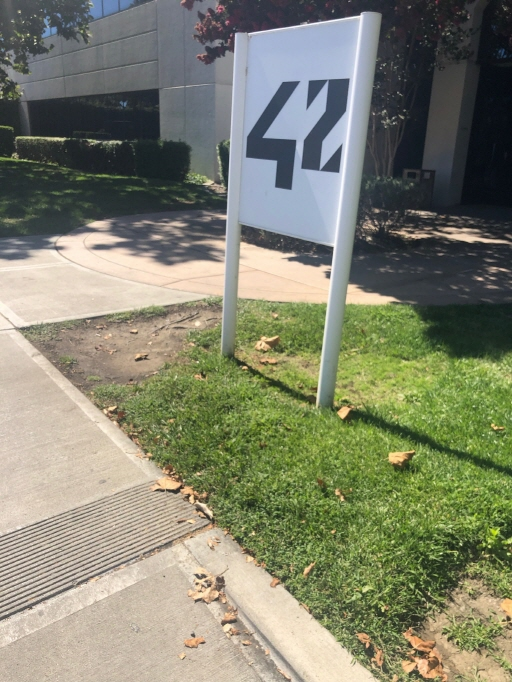
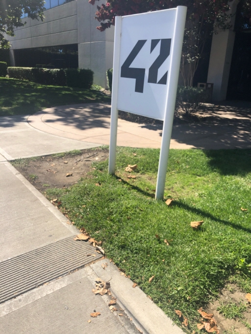
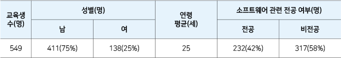
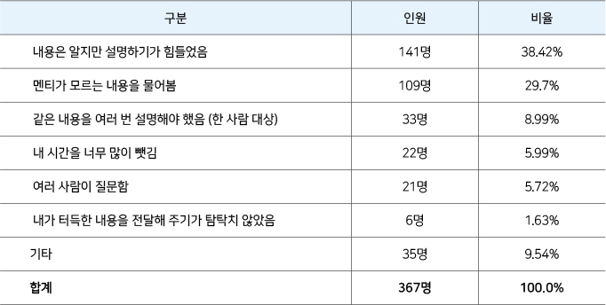
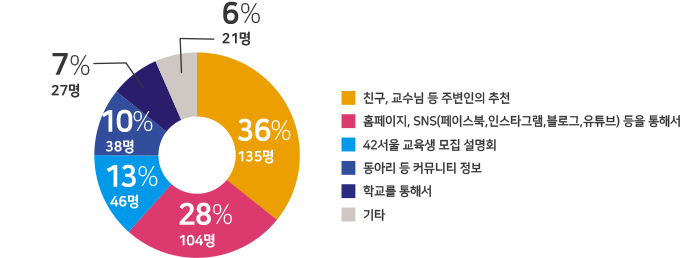

제3장 사업
3가지 사업
1. 42서울
1) 준비
(1) 계약 전 진행 상황
ο 에꼴42 방문
이민석 학장은 학장에 선임된 후, 취임 전인 2019년 7월 7일 ~ 12일까지 5일 동안, ‘이노베이션 아카데미 소프트웨어 혁신 교육 프로그램 도입을 위한 협상단’을 구성하여, 프랑스 파리의 ‘에꼴42’, 42 네트워크의 교육기관인 리옹의 ‘LE101’, 벨기에 브뤼셀의 ‘Code19’를 방문했다. 협상단은 이민석 학장 선정자를 비롯하여 유관부처 및 기관 관계자와 업계 전문가 등 총 6명으로 구성됐다 협상단의 방문 목적은 에꼴42의 교육 시스템이 이노베이션 아카데미가 추구하는 교육 목표 및 방법과 맞는지를 확인하고 추후 계약을 진행할 경우, 일정을 협의하기 위한 출장이었다. 협상단은 이번 방문을 통해 에꼴42와 42교육 프로그램 라이선스를 위한 기초 협의를 하고, 에꼴42에 재학중인 학생들과 인터뷰를 진행했다. 협상단은 출장에서 에꼴42의 교육과정에 대한 내용을 상세히 확인했다. 에꼴42의 전체 교육 과정은 공통 트랙과 전문 트랙으로 구성돼 있고, 공통 트랙을 마치면 인턴을 하는 것으로 과정이 구성되어 있었다. 레벨의 구성은 2020년 1월부터 바뀌었지만 기본적으로 두 단계와 인턴으로 구성된 상황은 지금과 다르지 않다. 협상단은 출장을 통해 교육 확장성에 대한 확인도 했다. 파리의 에꼴42는 33명의 운영 인력이 3,700명 정도의 학생을 관리하고 있었다. 같은 42 네트워크 학교인 벨기에 브뤼셀의 Code 19는 200명 정도의 학생에 6명의 스태프가 있었다. 리옹의 LE101도 250여명의 학생이 있으며, 전일제 스태프는 5명이었다. 이미 7년 이상의 경험으로 안정적인 운영을 하고 있는 에꼴42는 33명의 운영인력이면 확장성이 잘 확보된 경우지만, 다른 두 곳은 기대했던 만큼의 확장성을 확보하지는 못하고 있었다. 반면 한국의 경우는 공공적 성격을 갖고 있고, 새로운 교육 시스템 개발, 학생들에 대한 지원금 이슈도 있어서 더 많은 인력이 필요할 것으로 사료됐다. 또한 각 캠퍼스별로 여러 명의 학생들을 만나 지원동기, 학업 기간과 현재 진도 상황, 에꼴42가 추구하고 있는 동료학습, 동료평가에 대한 개인적인 의견을 들을 수 있었다. 이 과정에서 팀 프로젝트나 개인 프로젝트 상황에서 동료학습과 평가라는 교육 방식이 잘 동작하고 있음을 확인할 수 있었다. 교육수준에 대해 에꼴42의 디렉터는 평생학습을 추구하는 직업 교육 기관이라고 스스로를 정의했다. 실제 에꼴42는 공통 트랙을 18개월 이내에 끝내고, 21레벨을 3~5년에 끝내는 것으로 설계하고 있었다. 하지만 대부분의 학생들은 15레벨에 이르기 전에 취업을 하여 21 레벨을 완성한 학생은 전체 입학생 가운데 20% 미만이라고 했다. 협상단의 소프트웨어 전문가들은 각 기관 견학 및 책임자의 설명, 시스템 확인, 학생 인터뷰를 통해서 대체로 합의한 에꼴42 시스템에 대한 평가는 다음과 같다. 협상단은 이번 방문을 통해 ▲에꼴42 도입하여 규모 있는 인력 양성이라는 이노베이션 아카데미 설립 목표 달성 ▲에꼴42 단점 보완할 수 있는 우리 자체 프로그램 개발 병행 ▲자체 프로그램 개발 후에도 에꼴42만의 장점 많아 계속 활용 등 세가지 결론을 이끌어냈다. 이번 방문에서 협상단과 에꼴42 양측은 42서울을 열기로 기본적으로 합의하고 다음과 같은 일정으로 계약과 후속 조치를 진행하기로 잠정 합의했다.ο 42실리콘밸리 방문
이민석 학장은 2019년 8월 31일~ 9월 5일까지 42실리콘밸리를 방문하고, 현지에서 유사한 개념의 소프트웨어/창업 스쿨을 설립했던 과메 얌네인(Kwame Yamgnane) 씨를 만났다. 얌네인씨는 에꼴42의 공동 창업자 중 한명으로 지금은 42실리콘밸리를 그만두고, 퀘이저 실리콘밸리(Qwasar Silicon Valley)라는 이름의 소프트웨어 개발 및 창업 교육 기관을 오클랜드에 설립해 운영하고 있다. 얌네인씨는 에꼴42는 많은 장점에도 불구하고, 프로젝트 중심의 교육으로 일반대학에서 배우는 컴퓨터 과학(Computer Science) 과목에 대한 이해가 부족할 수 있다고 말했다. 또 얌네인씨는 그 부분을 보강하기 위해 대학과 협력하는 모델의 새로운 학교를 설립했다고 말했다. 팰러 앨토(Palo Alto)에서 만을 건너면 있는 프리몬트(Fremont) 시에 있는 42실리콘밸리는 에꼴42가 직접 설립했다. 파리의 에꼴42와는 달리 42실리콘밸리는 매우 여유로운 공간에서 하드웨어 랩, 인공지능 랩, 창업 프로그램 등 다양한 프로그램을 실험적으로 운영하고 있었다. 파리와 실리콘밸리의 문화적인 차이와 학생들이 처한 환경 차이 때문에 직접적인 비교는 쉽지 않으나, 42실리콘밸리는 에꼴42에 비해 학생들에게 좀 더 빠른 학습을 요구하는 방식으로 운영되고 있었다. 42실리콘밸리 방문에서도 42 교육을 받고 있는 학생들과 면담을 진행했고, 다른 42 학생들과 크게 다르지 않은 상황을 직접 확인했다. 이 방문에서는 실리콘밸리의 한국인 개발자 커뮤니티 리더들, 스타트업 대표들과 스타트업 지원 조직들, 그리고 현지의 글로벌 소프트웨어 기업 및 스타트업의 개발자들을 만나서 개발자 부족, 채용관행, 인턴 프로그램 운영, 현지 부트캠프 현황 등에 관한 의견을 청취하고, 향후 협력 방안에 대한 논의를 진행했다. 
42실리콘밸리 방문에서 얻은 시사점들은 다음과 같다.

42실리콘밸리 방문에서 얻은 시사점들은 다음과 같다.
ο 니꼴라 사디락 교수와 미팅
이민석 학장은 2019년 9월 6일, 한 교육 컨퍼런스 참석차 방한한 니꼴라 사디락(Nicolas Sadirac) 교수와 만났다. 사디락 교수는 에꼴42 창립멤버로 에꼴42의 모든 교육철학을 정립한 사람이다. 사디락 교수는 이민석 학장과의 만남에서 “1년 정도 동료학습을 경험하면 학생들은 폭발적으로 성장한다”면서 에꼴42의 동료학습 방법에 대한 변함없는 믿음을 보여주었다. 특히 사디락 교수는 학생들이 새로운 것을 학습하는 과정에서 이전 기술을 가진 사람이 미래에 바뀔 수도 있는 지식이나 방식을 강요해서는 안된다고 강조했다. 사디락 교수는 에꼴42를 2018년에 퇴직하고, 지금은 ‘Nicolas Sadirac & Co’의 대표를 맡고 있다. 이 회사에서 사디락 교수는 에꼴42와 같은 교육철학을 가진 ‘Zone01’라는 이름의 학교를 저개발국가에 설립해 무료로 교육시킨 후 학생이 취업하면 연봉의 일부를 교육비로 보상받는 방식의 학교를 설립할 준비를 하고 있다고 말했다. 지금 사디락 교수는 ‘Zone01’을 카자흐스탄에 최초로 설립해 운영 중이며 아프리카 등으로 확장할 계획을 갖고 있다.ο 에꼴42 소피 비제르 디렉터와 미팅
이민석 학장과 정보통신기획평가원 권민지 책임은 2019년 9월 10일, 컨퍼런스 참여 차 방한한 소피 비제르 (Sophi Viger) 에꼴42 디렉터와 계약 관련 회의를 가졌다. 이 미팅에서 7월 방문에서 합의한 내용들을 점검하고, 라이선스 계약에 필요한 세부사항을 논의했다. 회의 결과 2019년 7월 방문 당시, 잠정적으로 합의했던 일정을 에꼴42측에서 지킬 수 없게 되었다는 것을 확인했다. 동시에 우리측에서 진행하고 있던 이노베이션 아카데미의 건물 리모델링 작업 일정도 지연되고 있어, 일정을 재조정하기로 합의했다. 에꼴42측에서는 전 세계로 시스템을 확장하고 있어 일정압박에 쫓기고 있었다. 수정된 시스템 구축 일정은 11월 초에 방문하여 2주 정도 작업을 진행하기로 하고, 42시스템 초기 필요인원에 관해서도 합의했다. 또한 계약서 문안에 대한 논의도 진행하여 잠정 합의했다.(2) 에꼴42 방문과 계약
이민석 학장과 정보통신기획평가원 권민지 책임은 2019년 9월 30일 ~ 10월 3일까지 다시 에꼴42를 방문하여 42서울 운영을 위한 계약을 체결했다. 법무법인 율촌 소속의 프랑스 현지 변호사도 계약 체결을 지원하기 위해 동행했다. 이번 방문의 주목적은 계약 체결이지만, 계약 체결과 아울러 42 교육 시스템을 운영하기 위한 네트워크 환경 등 학습관리시스템(LMS) 구축 일정 확정, 신입생 선발에 관한 의견 조율, 시스템 운영팀(bocal) 인턴 교육에 관한 논의도 같이 이뤄졌다. 그동안 양측 간 이견이 있었던 부분은 2019년 9월 소피 비제르 디렉터의 방한 때 합의가 됐으며, 다른 미세한 부분들은 에꼴42가 다른 나라들과 체결하는 표준 계약을 준용하기로 했다. 에꼴42는 이노베이션 아카데미가 정부 주도로 설립돼 공공적인 특성으로 인해 발생하는 제약에 관한 부분들도 일부 수용했다. 교육생과 시스템에 로그인 되어 있는 42서울 스태프들의 개인정보 일부가 파리의 에꼴42 서버에도 저장되는 바, 해당 개인정보에 대한 관할권 등을 논의한 뒤 계약을 체결했다. 이번 출장 기간 중에 교육생 선발 방식에 대한 논의도 진행했다. 이노베이션 아카데미는 재단 설립 후, 에꼴42의 논리 테스트와 함께 코딩 테스트, 자가학습, 코딩 테스트를 하는 2단계의 시험과 지원동기 확인을 위한 에세이를 선발 기준에 포함하여 선발한 뒤 집중교육(La Piscine)을 시행하는 안을 준비했다. 하지만 에꼴42는 1개월 집중교육 과정으로 충분히 학생을 선발할 수 있으며, 이 외에 테스트를 통해 선별하는 것은 누구나 지원할 수 있어야 한다는 에꼴42의 철학과 다르다는 입장이었다. 결국 이노베이션 아카데미의 선발 계획 안은 수용되지 않았고, 에꼴42의 표준적인 온라인 논리테스트를 통해 선발하기로 최종 합의했다. 계약과 함께 42서울 운영 일정도 조율했다. 최초 입학생을 위해 11월 1일부터 42서울 온라인 테스트 사이트를 한달간 열기로 하고, 에꼴42 측의 기술 담당자를 지정했다. 또한 9월 중에 인터뷰를 통해 선발된 두 명의 에꼴42 소속 한국 학생을 에꼴42에서 2개월간 시스템 운영 관련 교육을 시킨 뒤 42서울의 운영 스태프(bocal)에 합류시키는 것으로 합의했다. 또한 에꼴42 소속 직원 3명이 2020년 1월 6일부터 2주간 방한하여 교육을 위한 IT 시스템 설정 작업을 진행하며, 그 중 한 명은 첫번째 집중교육 시험 때까지 기술 지원을 담당하기로 했다. 2019년 10월 2일, 에꼴42와 이노베이션 아카데미는 42서울 개설에 관한 계약서에 최종 서명했다. 계약체결에 따른 함의와 이번 에꼴42 방문에서 논의한 내용은 다음과 같다.(3) 모집 설명회
ο 홍보물 준비
이노베이션 아카데미는 2019년 11월 1일부터 30일까지 30일간 진행 한, 42서울 교육생 모집을 위해 약 한 달 전인 10월 11일부터 교육생 모집 전국 설명회를 개최했다. 모집 설명회 개최에 앞서 교육생 모집과 설명회에서 활용할 홍보물을 제작하였다. 첫 번째로 설명회 홍보를 위한 포스터와 현수막을 제작했다. 홍보물에는 설명회 일시, 장소, 참석 신청 방법, 교육생 선발 절차 등을 안내하는 내용으로 구성했다. 그리고 설명회에 참석한 예비 지원자에게 42서울 프로그램을 설명할 수 있는 설명회 파워포인트(PPT)와 종이 리플릿을 제작했다. 홍보물 디자인은 이노베이션 아카데미 BI(Brand Identity)에 사용되는 파란색 계열의 색상과 벌집 모양을 통일성 있게 활용하되 홍보물 제작 용도와 내용에 적합하게 변형하여 작업했다. 이 작업을 진행하던 2019년 10월은 이노베이션 아카데미가 창립된 지 약 3개월, 42서울 라이선스 계약을 체결한 지 보름이 채 지나지 않았던 시기였다. 이로 인해 재단 내외 구성원들은 재단 소개와 ‘42서울’이라는 교육 프로그램을 명확하고 이해하기 쉬운 문구로 표현하고, 디자인하기 위해 수많은 의사소통 과정을 거쳐야 했다.< 이노베이션 아카데미 BI >

< 이노베이션 아카데미 42서울 교육생 모집 포스터 >
< 이노베이션 아카데미 42서울 안내 리플릿 >
ο 5개 지역서 총 6회 모집 설명회 개최
이노베이션 아카데미는 2019년 10월 11일부터 31일까지 전국 5개 지역에서 총 6회에 걸쳐 42서울 교육생 모집을 위한 설명회를 개최했다. 개최 지역은 서울을 시작으로 대전, 광주, 부산, 제주까지 수도권 외 지역 방문에 초점을 맞추었다. 이를 통해 소프트웨어 개발 교육 정보를 접하기 어려운 개발 커뮤니티 인프라 소외 지역의 예비 지원자들에게도 정보를 전달하고자 노력했다. 모집설명회는 다음 아래의 지역별 일정과 장소에서 진행됐다.< 19.10.11 서울 역삼1문화센터에서 42서울 교육생 모집 절차를 설명하는 이민석 학장 >
42서울은 정부 주도로 설립한 비영리 재단인 이노베이션 아카데미의 첫 번째 교육 프로그램으로 세계적 명성이 높은 프랑스의 ‘에꼴42’를 아시아 최초로 도입한 소프트웨어 교육 프로그램이다. 국내에 최초로 도입되는 프로그램인 만큼 선발 절차부터 커리큘럼까지 예비 지원자들의 궁금한 점이 많았고 관심도 높았다. 설명회 참석 신청은 온오프믹스와 구글 서베이를 통해 온라인으로 사전예약을 받았다. 행사 당일에는 행사 공간에 수용 가능한 인원만 현장에서 추가로 신청 받았다. 에꼴42는 유럽 지역에서 이미 소프트웨어 개발 교육 프로그램으로서 교육 효과, 취업 연계 측면에서 성공적 운영기관으로 정평이 나 있었다. 그래서 이미 국내 관련 분야 사람들 은 지대한 관심을 갖고 있었다. 이 때문에 국내에서 처음 문을 연다는 소식이 알려지자 예비 지원자는 물론이고 소프트웨어 개발 분야 현업 관계자들이 42서울 교육생 선발 절차와 교육 커리큘럼, 운영 방식에 관심을 갖고 설명회에 참석하였다. 모집 설명회는 약 2시간 동안 교육 프로그램에 대한 설명부터 선발 절차, 교육 공간 소개, 질의응답 순으로 진행됐다. 이민석 학장은 참석자들에게 “42서울교육 프로그램은 잘하는 것보다 얼마나, 어떻게 성장하는지가 중요하다”며 “동료와 협력해 가며 서로 배우고 성장하는 것이 핵심”이라고 말했다.< 19.10.31 서울 중구 페럼타워에서 42서울 교육생 모집 설명회에 참석한 예비 지원자들 >
질의응답 시간 동안 참석자들은 선발 절차와 기준 등 교육생 선발에 대한 질문을 가장 많이 하였다. 그리고 교수와 학비, 교재가 없는 3무(無) 교육시스템에서 어떻게 동료 학습이 이루어지고, 상호 평가는 어떤 식으로 진행되는지 등 학습 과정에 대한 문의가 그 뒤를 이었다. 2시간 동안 진행된 설명회에서 질의응답이 1시간여 가까이 진행될 정도로 42서울에 대한 높은 관심을 보였다.ο 42서울 교육생 모집 전국 설명회 참석자 통계
42서울 교육생 모집 전국 설명회에는 현장접수 인원을 포함하여 총 491명이 참석했다. 이노베이션 아카데미는 설명회가 끝난 뒤 참석자를 대상으로 42서울 관련 설문 조사를 진행했다. 설명회 참석자의 88.4%인 434명이 설문에 참여했다. 설문 조사 주요 결과를 살펴보면 아래의 표와 같다. (* 제주 지역 설문 조사 제외)

 설명회 참석자의 연령대는 20대가 69.4%(220명)로 가장 높았고, 뒤를 이어 30대 12.3%(39명), 40대 7.3%(23명), 50대 6%(19명), 10대 2.9%(9명) 순위였다. (*연령별 참석자는 서울 강남권을 제외한 부산, 광주, 대전, 서울 강북권 참석자 기준)
42서울을 사전에 알고 있었느냐는 질문엔 51%가 “그렇다” 및 “매우 그렇다”라고 응답하여, 설명회 참석자의 과반수가 42서울 프로그램에 대해 인지하고 있었다. 설명회 내용이 유익했느냐는 질문에는 100%에 육박하는 96.6%가 “그렇다” 및 “매우 그렇다”라고 조사돼 매우 만족한 것으로 나타났다. 42서울을 지인에게 추천할 의향이 있느냐는 질문에는 95.6%가 “그렇다” 및 “매우 그렇다”라고 응답해, 본인 참여에 그치는 것이 아니라 주변 지인에게도 추천하고 싶은 프로그램이라는 것을 입증했다.
설명회 참석자의 연령대는 20대가 69.4%(220명)로 가장 높았고, 뒤를 이어 30대 12.3%(39명), 40대 7.3%(23명), 50대 6%(19명), 10대 2.9%(9명) 순위였다. (*연령별 참석자는 서울 강남권을 제외한 부산, 광주, 대전, 서울 강북권 참석자 기준)
42서울을 사전에 알고 있었느냐는 질문엔 51%가 “그렇다” 및 “매우 그렇다”라고 응답하여, 설명회 참석자의 과반수가 42서울 프로그램에 대해 인지하고 있었다. 설명회 내용이 유익했느냐는 질문에는 100%에 육박하는 96.6%가 “그렇다” 및 “매우 그렇다”라고 조사돼 매우 만족한 것으로 나타났다. 42서울을 지인에게 추천할 의향이 있느냐는 질문에는 95.6%가 “그렇다” 및 “매우 그렇다”라고 응답해, 본인 참여에 그치는 것이 아니라 주변 지인에게도 추천하고 싶은 프로그램이라는 것을 입증했다.
ο 42서울 교육생 모집 온라인 설명회 개최
2019년 10월 20일 저녁 8시, 오프라인으로 진행하는 설명회에 참석이 어려운 예비 지원자들을 위해 재단 공식 유튜브 채널을 통한 온라인 설명회를 개최했다. 온라인 설명회 또한 오프라인 설명회와 동일하게 진행했다. 실시간 채팅을 통한 QnA(질의응답) 코너를 마련하여 오프라인 설명회에 참석하지 못하는 교육생들에게도 42서울 프로그램에 관한 궁금증을 해결할 수 있는 기회를 제공했다.< 42 서울 교육생 모집 온라인 설명회 실시간 화면 >
< 강남구의 한 스튜디오에서 진행한 온라인 설명회 준비 모습 >
온라인 설명회는 최대 동시 접속자 수 77명을 기록하였고, 교육생 모집 마감일인 11월 30일까지 총 7,000회의 조회 수를 기록하였다. 재단은 온라인 설명회 영상을 유튜브 채널에 게시하여 42서울 온라인 테스트에 지원하고자 하는 교육생들에게 교육 프로그램 안내 및 선발 절차를 안내하는 가이드 영상으로 활용하였다. 온라인 설명회 영상 조회 수는 약 1만 5,000회를(2020.9.15. 기준) 기록할 정도로 42서울 프로그램에 관한 관심이 지속해서 이어지고 있음이 확인됐다.(4)학생 지원현황과 에피소드
ο 지원현황 추이
재단은 2019년 11월 1일부터 30일까지 한 달간 ‘42서울’ 홈페이지(https://42seoul.kr/)에서 교육생을 모집했다. 지원자격은 코딩 경험이 없어도 성인 또는 고등학교 졸업 이상의 학력자이면, 성별, 경력, 국적 상관없이 누구나 지원 가능하도록 했다. ‘42서울’은 교수, 교재, 학비 없이 소프트웨어를 학습하는 프랑스 ‘에꼴42’의 아시아 최초 캠퍼스로, 공식 오픈 전부터 국내외 많은 이들의 기대를 모았다. 그 관심을 입증하듯 11월 1일 ‘42서울’ 지원 사이트 오픈과 동시에 온라인 테스트 응시자가 몰려 교육생 모집 시작 10일 만에 5,000여명이, 모집 한 달여 만에는 1만 1,118명에 달하는 응시자가 몰렸다. 응시 연령대는 취업을 준비 중인 청년층이 대부분이었다. 최연소 지원자는 만 15세(고등학교 졸업 이상의 학력자)였고, 최고령 지원자는 만 67세였다. 재단은 지원자들의 뜨거운 반응에 힘입어 1개월 집중교육(La Piscine) 및 본교육 과정 참여 기회를 확대하였다. 보다 많은 이들이 ‘42서울’의 혁신 교육 과정을 경험해 볼 수 있도록 추가로 150여명에게 1개월 집중교육(La Piscine) 참여 기회를 제공하고, 본교육 참여자 역시 추가로 선발했다. 단, 수용 가능한 인원이 한정되어 있는 만큼 체크인 미팅과 1개월 집중교육(La Piscine)을 2번에 나눠 1차, 2차로 진행하는 것으로 했다. 1기 1차 교육생은 기존대로 2019년 12월 6일, 7일 양일간 체크인 미팅을 통해 대면 확인을 완료했다. 이후 2020년 1월 20일부터 1개월 동안 진행된 집중교육을 거쳐 선발된 최종 교육생은 2월 24일부터 약 2년간 본 교육 과정을 이수하는 것으로 하였다. 재단은 지원자들을 대상으로 11월 1일부터 30일까지 ‘42서울’ 홈페이지에서 논리력과 기억력 테스트로 구성된 온라인 테스트를 거쳐, 합격한 이들에 한해 본인 확인 등을 거쳐 최종 집중교육(La Piscine) 대상자를 선발했다. 선발된 교육생들은 소프트웨어 인재로서 가능성을 확인할 수 있는 창의캠프와 1개월 집중교육(La Piscine) 과정을 밟았다. 이후 본 교육 과정 진입이 확정된 교육생은 게임 요소를 적용한 단계별 프로젝트를 수행하며 소프트웨어를 학습하고 있다. 수업은 교수, 교재, 학비 없이 서로의 협업으로 배우는 P2P(Peer To Peer) 방식으로 진행된다.ο 고객CS이슈와 VOC
재단에게 고객(Customer)은 예비 교육생 또는 교육생이다. 재단은 고객 즉, 교육생들과 소통을 위해 공식 이메일과 글로벌 협업용 메신저인 슬랙(Slack)을 활용했다. 이메일은 홈페이지에 게시하여 예비 교육생뿐만 아니라 누구든지 궁금한 것이 있으면 문의할 수 있도록 했다. 이메일로는 주로 교육일정과 지원금에 관한 문의가 오며, 체크인 미팅 대상자에 대한 안내사항이 해당 메일 계정으로 발송됨에 따라 참여 대상자의 문의가 주를 이루었다. 슬랙(Slack)은 교육생과 재단 스태프들이 바로 소통할 수 있는 채널로써 로그인 및 접속 관련, 인트라 서버 이용 등 시스템 관련 문의가 대부분이었다. 시기별로 주를 이루는 문의 내용은 다음과 같았다. 2020년도 교육을 앞두고 미처 예상하지 못했던 일이 일어났다. 코로나19로 인하여 계획했던 교육일정에 변화가 생겼다. 전염 가능성이 있는 질병이 유행하는 시기에 교육장에 300여명의 교육생을 받는 것은 위험할 수 있다는 것이 과기정통부를 비롯한 유관부처의 공통된 의견이었다. 그에 따라 재단은 당초 2월 24일로 계획했던 1기 1차 본과정과 1기 2차 1개월 집중교육(la piscine) 개시일을 무기한 연기할 수밖에 없었다.
문제는 연기가 결정된 날이 교육 개시 이틀 전인 2월 22일이었다. 마침 주말인 토요일이라 재단에서는 300여명의 교육생들 한 명 한 명에게 일일이 유선으로 교육 연기를 안내했다. 게다가 코로나19 사태가 장기화되면서 교육을 정확히 언제 재개한다는 확답을 주지 못하자 교육일정에 대한 문의가 지속적으로 들어왔다. 무기한 일정 연기가 되면서 이와 관련한 CS 역시 폭발적으로 증가했다. 사전 체크인 미팅 또한 교육생들의 안전을 위해 온라인으로 진행하자 온라인 체크인 미팅기간에는 매주 100건 이상의 CS가 접수되곤 했다.
재단은 코로나19 사태가 계속되면서 정부의 ‘사회적 거리두기 지침’에 발맞춰, 전 세계 42 캠퍼스 중 최초로 ‘1개월 집중교육(la piscine)’을 2부제로 진행하기로 결정했다. ‘2부제 1개월 집중교육(la piscine)’은 처음 시도하는 방식이라 과연 제대로 잘 운영될지 재단은 물론이고 교육생도 예상할 수 없었다.
재단은 1그룹은 ‘월, 수, 토’, 2그룹은 ‘화, 목, 일’ 등으로 나누어 출석 가능 요일을 지정했다. 또한 출입카드를 1그룹은 ‘빨간색’, 2그룹은 ‘파란색’으로 구분 지어 입장 즉시 안내 데스크에서 확인할 수 있도록 하였다. 사회적 거리두기를 위해 클러스터 내에서는 한 방향 앉기를 원칙으로 하고, 한 층당 143석의 좌석 중 절반 정도인 76석에만 앉을 수 있도록 좌석을 배치하였다.
2020년도 교육을 앞두고 미처 예상하지 못했던 일이 일어났다. 코로나19로 인하여 계획했던 교육일정에 변화가 생겼다. 전염 가능성이 있는 질병이 유행하는 시기에 교육장에 300여명의 교육생을 받는 것은 위험할 수 있다는 것이 과기정통부를 비롯한 유관부처의 공통된 의견이었다. 그에 따라 재단은 당초 2월 24일로 계획했던 1기 1차 본과정과 1기 2차 1개월 집중교육(la piscine) 개시일을 무기한 연기할 수밖에 없었다.
문제는 연기가 결정된 날이 교육 개시 이틀 전인 2월 22일이었다. 마침 주말인 토요일이라 재단에서는 300여명의 교육생들 한 명 한 명에게 일일이 유선으로 교육 연기를 안내했다. 게다가 코로나19 사태가 장기화되면서 교육을 정확히 언제 재개한다는 확답을 주지 못하자 교육일정에 대한 문의가 지속적으로 들어왔다. 무기한 일정 연기가 되면서 이와 관련한 CS 역시 폭발적으로 증가했다. 사전 체크인 미팅 또한 교육생들의 안전을 위해 온라인으로 진행하자 온라인 체크인 미팅기간에는 매주 100건 이상의 CS가 접수되곤 했다.
재단은 코로나19 사태가 계속되면서 정부의 ‘사회적 거리두기 지침’에 발맞춰, 전 세계 42 캠퍼스 중 최초로 ‘1개월 집중교육(la piscine)’을 2부제로 진행하기로 결정했다. ‘2부제 1개월 집중교육(la piscine)’은 처음 시도하는 방식이라 과연 제대로 잘 운영될지 재단은 물론이고 교육생도 예상할 수 없었다.
재단은 1그룹은 ‘월, 수, 토’, 2그룹은 ‘화, 목, 일’ 등으로 나누어 출석 가능 요일을 지정했다. 또한 출입카드를 1그룹은 ‘빨간색’, 2그룹은 ‘파란색’으로 구분 지어 입장 즉시 안내 데스크에서 확인할 수 있도록 하였다. 사회적 거리두기를 위해 클러스터 내에서는 한 방향 앉기를 원칙으로 하고, 한 층당 143석의 좌석 중 절반 정도인 76석에만 앉을 수 있도록 좌석을 배치하였다.
< 빨간색 >

< 파란색 >
< 좌석배치도 >
< 거리두기 >
2부제로 실시한 1개월 집중교육(la piscine)이 마지막 시험을 끝으로 무사히 마쳤다. 전 세계 캠퍼스 중에서 42서울에서 처음 시도했지만 우려와 달리 성공적이었다. 4주 간 쉼 없이 달려온 1개월 집중교육(la piscine)을 마치면서 이민석 학장이 직접 이메일로 교육생들에게 응원과 격려의 편지를 보냈다. 교육생들이 4주 동안 쏟은 각고의 노력과 시간이 얼마나 의미 있었는지 돌아볼 수 있는 진심을 담은 이메일이었다.< 학장님 말씀 >
(5) 42도쿄 방문
2020년 1월, 이노베이션 아카데미는 2월에 시작하게 될 42서울의 첫 집중교육(La Piscine) 준비로 여념이 없었다. 에꼴42가 이제 해외 네트워크를 확장하는 시점이었기에 일반 시스템 사용자가 기대하는 매뉴얼은 존재하지 않았다. ‘La Piscine’ 이 수영장을 의미하듯이 집중교육은 ‘수영장에서 스스로 헤엄쳐 나오는 방법을 터득해 살아 남아야 한다’는 철학을 담고 있어 시스템을 도입해 사용하는 관리자도 그 철학을 철저히 따라 운영하고 관리해야 했다. 재단은 그 무렵 이웃나라 일본에서 42도쿄(Tokyo)의 첫 집중교육이 시작됐다는 소식을 접했다. 42도쿄는 42서울보다 한 달 정도 앞서 집중교육을 시작했다. 42 교육 경험이 전무한 재단과 달리 42도쿄는 에꼴42의 교육시스템을 직접 경험한 이들이 42도쿄 운영을 맡고 있었다. 재단은 42도쿄의 운영 노하우를 배울 필요가 있다고 판단하고, 42도쿄에 방문신청을 했다.< 일본 도쿄 도착 >
재단은 42도쿄의 방문 허가가 나자 김수보 멘토와 한채은 매니저, 이민석 학장의 일본 출장을 결정했다. 일본 출장은 2020년 1월 8일~11일까지 3박 4일 일정으로 확정됐다. 출장 기간동안 42의 교육현장을 경험하고 그 경험을 42서울에 담아 내기 위해 검토해야 할 사항은 ▲42 스태프의 역할 파악 ▲집중교육 기간 동안 발생할 수 있는 시스템 이슈 및 해결방법 ▲42 동료평가 방식의 교육 현장 실태조사 ▲시험(exam) 운영 방식 파악 등이었다.< 42도쿄가 위치한 건물 >
< 42도쿄 내부 >
2020년 1월 8일 12시경, 42도쿄가 있는 롯폰기에 도착했다. 번화가에서 다소 떨어진 주택가에 위치한 42서울과 달리, 번화가 내 고층 빌딩 사무실에 위치하고 있는 42도쿄의 분위기는 사뭇 달랐다. 42서울은 지원자의 대부분이 20대 초중반의 대학생이라 대학교 같은 분위기라면, 42도쿄는 직장인들이 많아 낮시간보다 오후 4시 이후부터 교육장이 활기를 띠었다. 특히 42도쿄 스태프와 이야기를 나누며 가장 인상 깊었던 점은 ▲교육생들에 대한 느슨한 관리 ▲ 교육생들의 문의에 일일이 대응해 주지 않고 직접 해결하도록 유도 ▲불만 불평이 많은 교육생은 자연스런 퇴소유도 등이었다. 일반적으로 교육기관의 운영 스태프 역할은 교육생의 불만을 친절히 상담하여 해소시키고, 교육생의 만족도를 극대화하도록 하는 것이 주업무인 데, 42도쿄의 운영 스태프의 역할은 달랐다. 42도쿄의 운영 스태프는 42만의 불친절한 서비스 내에서 학습할 수 있는 환경만 제공하고, 교육생 스스로 문제를 해결할 수 있도록 스태프의 역할을 최소한으로 한정했다. 교육생이 이러한 42의 교육방식에 적응하지 못하면 다른 교육 서비스를 이용하면 된다는 뚜렷한 운영철학을 갖고 있었다. 시험방식도 여느 대학의 시험과는 확연히 달랐다. 교육생이 컴퓨터 디렉토리를 옮겨가며 시험지를 찾는 것부터 시험의 시작이었다. 심지어 10분 안에 시험지를 찾아서 읽고, 시험을 위한 프로그램을 실행하지 못한 교육생은 곧바로 퇴장이었다. 실제로 42도쿄의 시험에서 처음 시험을 치르는 교육생들의 80%가 시험지를 못 찾거나, 프로그램을 실행하지 못해 10분 안에 퇴장한다고 했다. 이 과정에서 스태프의 역할은 부정행위(Cheating)를 감시하고, 시험 시작 10분 후 퇴장 여부를 확인하는 역할을 할 뿐이었다.< 42도쿄 내부에서 본 야경 >
< 42도쿄 직원들과 전체 사진 >
도쿄 출장팀이 3박 4일 일정의 42도쿄 방문으로 42의 운영 노하우를 전부 파악하기에는 빡빡한 일정이었다. 하지만 42도쿄에서 직접 보고 듣고 인상깊었던 스태프의 역할을 42서울 스태프들과 공유하고, 42서울운영에 있어 가장 중요한 시험 관리 및 운영방법에 대해 집중 논의했다.2) 학생
(1) Honor Code와 학칙
ο 42서울 Honor Code
‘Honor Code’는 우리말로 ‘명예 규율’로 번역된다. 이 단어의 사전적 의미는 ‘구성원들이 단체의 명예를 위해 반드시 지켜야 할 기본적인 준칙’을 의미한다. 명예 규율의 준칙은 구성원의 도덕성과 윤리의식에 근거해 정해지며, 구성원들 사이의 절대적인 신뢰를 필요로 한다. 'Honor Code'는 42서울의 학생이자, 학습하는 소프트웨어 개발자로서의 반드시 가져야 하는 자세를 담고 있으며, 학칙의 근간이 된다. 에꼴42의 숫자 ‘42’는 더글러스 애덤스의 SF소설 ‘은하수를 여행하는 히치하이커를 위한 안내서’에서 그 기원을 찾을 수 있다. 소설에서는 인생의 의미를 찾기 위해 ‘깊은 생각’이라는 컴퓨터를 750만 년 동안 돌려서 찾아낸 답이 바로 숫자 ‘42’였다. 즉 ‘삶과 우주와 모든 것에 대한 궁극적인 숫자’로 일컬어지는 42에서 따온 것이다. 재단이 42서울 교육을 통해 얻고자 하는 의미가 더글러스 애덤스의 소설에 나오는 ‘42’라는 답과 일맥상통한다고 할 수 있다. 42서울 교육에 참여하는 모든 교육생이 결국은 ‘은하수를 여행하는 히치하이커’인 셈이다. 재단은 교육생과의 약속을 ‘Honor Code’라 부르기로 했다. ‘42서울 Honor Code’는 다음과 같다.
ο 학칙제정
42서울은 비학위 교육 프로그램이지만 교육과정에 참여하는 교육생들이 기본적으로 지켜야 할 최소한의 규칙은 필요했다. 학칙 제정의 목적은 재단의 교육목적 및 교육목표의 구현을 위해 필요한 조직 및 운영 등에 관한 기본사항을 정하는 것으로 했다. 그후 재단은 여러 논의 과정과 토론을 거쳐 2020년 1월 20일, 총 7개장(1장 총칙, 2장 조직과 체계, 3장 42서울 교육생 운영, 4장 운영위원회, 5장 학칙의 개정, 6장 교육관 이용시간 및 휴관일, 7장 보칙) 23조 및 부칙 등으로 구성된 학칙을 제정했다. 학칙 제2조에 적용대상은 ‘1개월 집중교육(La Piscine) 과정을 통해 선발된 본 과정 교육생’으로 하고, 제3조에 재단의 교육목적을 ‘5C (Creativity, Critical Thinking, Challenge, Convergence, Collaboration) 역량을 갖춘 혁신적인 자기주도적 소프트웨어 개발자를 양성하는 것’으로 명문화했다. 학칙은 42서울의 꾸준한 운영을 통해 수정과 보완을 거쳐 완성해 나갈 예정이다.(2) 체크인 미팅
매번 체크인 미팅 등록 마감일까지 정원 내 등록인원을 마감하고, 결원이 발생하면 체크인 미팅 추가등록을 통해 추가 모집을 실시한 후, 체크인 미팅 최종인원을 선발했다. 체크인 미팅 최종인원은 체크인 미팅 지원페이지에 등록된 체크인 미팅 날짜가 되면 시스템상 자동으로 체크인 미팅 대기자 등록이 중지되면서 정원내 인원이 확정된다. 이후 취소자가 발생하면 사전에 확보된 대기자 명단 순서에 따라 사무국 직원들이 직접 참여 의사를 확인하고 최종 체크인 미팅 등록 절차를 진행한다. 이렇게 체크인 미팅 최종등록을 마친 인원이 집중교육(La Piscine) 과정에 등록한다. 재단은 체크인 미팅 최종등록 인원을 대상으로 지원페이지에 집중교육 지원자의 기본정보를 입력하도록 했다. 그리고 지원금 지급에 필요한 증빙서류를 해당 집중교육 지원자에 한해 제출하고, 집중교육 지원동기와 향후 계획 등이 담긴 에세이를 제출하도록 했다. 재단은 이렇게 지원자가 입력한 프로필 정보를 통해 사전 집중교육 참여자가 재등록한 경우가 있는지 여부를 확인했다. 재단은 이와 같은 체크인 미팅 프로세스를 거친 후, 집중교육 당일 지원자 등록을 최종 진행했다. 2020년도 체크인 미팅은 코로나19에 따라 오프라인 대신 온라인으로 진행했다. 재단은 코로나19로 인해 오프라인으로 진행되었던 체크인 미팅이 온라인 체크인 미팅으로 실시된다는 것을 사전 안내했으며, 구글 설문을 통해 비대면 체크인 미팅 절차를 마련한 후, 체크인 미팅을 실시했다.(3) 오리엔테이션(1기 1차, 2차 대상)
재단은 1기 1차와 2차 교육생들을 대상으로 실시했던 오리엔테이션을 코로나19 상황이 지속되면서 2기 교육생 들을 대상으로는 진행할 수 없었다. 재단은 교육생을 모집하면서 고민이 하나 생겼다. 그동안 수동적이고 획일화된 교육환경에서 학습하고 경쟁해온 교육생들이 42서울의 자기주도적이고 동료들과 함께 학습해야 하는 교육특성에 적응할 수 있을까 하는 문제였다. 그래서 생각한 것이 교육생 오리엔테이션과 창의캠프였다. 집중교육 과정이 시작되기 전에 교육생들을 대상으로 오리엔테이션과 창의캠프를 실시하여 42서울에 대한 이해도를 높이고 교육생들간 친밀감을 높일 수 있는 기회를 만들기로 했다. 오리엔테이션은 2020년 1월 초로 예정된 창의캠프 이전에 진행해야 했다. 재단은 사무실로 사용하던 서울 강남구 선릉역 위워크와 가까운 역삼동 GS타워 1층 아모리스 역삼점에서 2019년 12월 27일(금)에 오리엔테이션을 진행하기로 결정했다. 재단은 오리엔테이션을 대행업체 계약체결부터 결과보고 및 결산까지 보름 남짓한 기간에 모두 마쳐야 했다. 그래서 재단은 5,000만원 이하 수의계약 가능 업체(중소기업 및 여성대표기업) 중, 최저가의 견적금액을 제시한 최게바라 기획사와 함께 진행하기로 결정했다1) . 오리엔테이션 참가 대상자가 500여명으로 결코 적은 인원은 아니었다. 참가자들에게 나눠줄 선물구매조차 크리스마스 시즌이라 제때 배송을 장담할 수 없었다. 그럼에도 재단은 모든 준비를 마쳤고 볼펜과 마우스패드에 42서울이로고로고 실크 인쇄까지 해냈다. 재단은 계획대로 오리엔테이션을 12월 27일(금) 오후 2시에 시작했다. 참가자들이 앞자리부터 채워서 앉도록 하기 위해 행사 순서지를 비행기 티켓처럼 인쇄하여 좌석번호를 럭키 드로우 번호로 넣었고 오리엔테이션 중에 실시간 오픈채팅이 가능한 QR코드를 넣었다.< 비행기 티켓 닮은 행사 순서지 >
사전 이벤트로는 원하는 폼보드(formboard)를 찍고 포즈를 취할 수 있는 포토존을 마련했다. 이곳에서 촬영한 사진은 해시태그와 함께 인스타그램에 올리거나 현장에 준비해둔 포토 키오스크 2대에서 즉석 인쇄가 가능하도록 했다. 20여개의 폼보드는 사전에 교육생들로부터 “42서울 합류로 얻고 싶은, 바라는 희망사항의 키워드”로 제작하였다.< 포토존과 폼보드 >
오리엔테이션 본 행사는 사회자 대신 빠른 템포의 음악과 함께 화면에 비춰진 큰 텍스트로 시작됐다. 큰 화면에는 본 행사 시작 전 이벤트에 참여하며 즐거워하는 교육생들의 모습을 찍은 사진이 보여 지도록 했다. 행사 직전에 촬영된 자신의 모습들이 나오자 교육생들은 환호하면서도 놀란 표정을 지었다. 이후에는 재단 관계자 4명과 42서울 교육생 6명이 이그나이트(ignite) 형식의 발표가 이어졌다. 객석 좌우에 설치된 3개의 스크린에서는 빠띠 타운홀 프로그램을 활용하여 각 발표에 대한 질문들이 바로 공유되었다. 이그나이트(ignite)란 ‘불을 붙이다, 불이 붙다’라는 의미로, 정해진 짧은 시간 동안 준비한 파워포인트(PPT) 등을 이용해 간결하고 명확하게 발표하는 방식이다. 15장의 슬라이드가 각 20초씩 총 5분 동안 자동으로 넘어가는 이그나이트 발표 형식은 정말 많은 연습이 필요하다. 참가자 10명 모두 처음해보는 형식의 발표였지만 무대에서 최선을 다하는 모습은 42서울의 진정한 주인공들이었다.< 럭키드로우 >
마지막 프로그램은 럭키드로우로 재단이 준비한 상품을 참가자들에게 선물하는 시간이었다. “행운은 랜덤으로 찾아오고, 팀원과 나누면 더욱 커진다”를 모토로 무대위에 설치된 LED 화면을 통해 랜덤으로 행운번호가 선정되었다. 행운의 상품은 당첨된 참가자는 물론이고 당첨자의 양 옆과 주변을 둘러싼 모두에게 주어졌다. 당첨자와 주변의 모든 교육생들이 즐거워했다. 교육생 대상의 첫 오리엔테이션이 짧은 준비기간에도 불구하고 참가자들의 열띤 호응에 힘입어 성황리에 마무리됐다.(4) 창의캠프(4회, 1기 1차, 1기 2차 대상)
재단은 1개월 집중교육(La Piscine)을 앞둔 42서울 1기 예비 교육생들을 4개 그룹으로 나누어 경기도 양평군 블룸비스타에서 창의캠프를 열었다. 한 그룹(회차)당 100여명의 예비 교육생을 대상으로 2박 3일 일정의 프로그램을 진행했다. 재단의 창의캠프 실시 목적은 수동적이고 소극적인 기존의 교육시스템에 익숙한 학습자가 능동적이고 적극적 학습자로 거듭나 스스로 문제해결 능력을 함양할 수 있게 하는 데 있었다. 프로그램 또한 이러한 실시 목적에 의거하여 기획하고 구성했다. 재단은 창의캠프 프로그램을 총 7개로 구성했다. 참가자들 모두 함께 활동하면서 친근감을 기를 수 있는 ‘아이스 브레이킹’, 같은 취향을 가진 취향 셔플(Shuffle)로 서로에 대해 이해도를 높일 수 있는 ‘우리 모두의 순간’, 최적의 루트 찾기 게임으로 협업 마인드를 함양하는 ‘코드 15 최적의 루트를 찾아라’, 소프트웨어 개발자에게 예술가적 영감을 불러 일으키는 ‘사물과 공감하는 예술가적 감성’, 여럿이 한자리에 모여 아이디어를 기획하고 발표하는 ‘중구난방 손끝 프로젝트’, 아이디어를 영상으로 만들어 홍보하는 ‘42초 광고영상 만들기’, 기획한 아이디어에 대해 서로 피드백을 주고 받고 소통하는 ‘42서울 프로젝트 공유와 공감’ 등이다.< 1일차 처음 입소했을 때 모습 >
< 1일차 취향 셔플을 진행할 때 모습 >
< 2일차 프로그램이 시작되며, 조원들에게 자기를 소개하는 모습 >
< 2일차 저녁에 42초 광고 영상을 만들면서, 조별로 단체사진을 찍는 모습 >
< 3일차 공유와 공감 때, 각 조의 아이디어를 설명해주고 서로의 아이디어에 대해 피드백 해주는 모습 >
< 4개 그룹 중 2그룹 창의캠프 단체사진 모습 >
대부분의 프로그램은 교육생 스스로 일정관리를 해야 하므로 자발적 시간관리 능력과 주도적 문제해결 능력이 필수로 요구됐다. 프로그램 자체가 교육생들에게 시간관리 능력과 주도적 문제해결 능력을 발현할 수 있도록 끊임없이 자극을 주었다. 또한 문제를 스스로 해결하기보다 동료들과 협업을 통해 성취할 수 있도록 하여 나홀로 성장하는 것이 아니라 동료와 함께 성장하는 피어 러닝(Peer Learning)의 기본자세를 갖출 수 있도록 했다. 재단은 창의캠프 때 교육생들에게 ‘42서울 후드 티’를 제작해 나누어 주었다. 이른바 창의캠프 연수복으로 참가자 모두 디자인과 품질에 만족했다. 이후 ‘42서울 후드 티’는 1기 교육생의 상징이 되었다.< 2020 42서울 창의캠프 후드 디자인 >
처음 창의캠프 실시로 인한 어려움도 있었다. 창의캠프는 기존의 학습 관행을 완전히 바꿔야 했기 때문에 일반적인 캠프운영 방식과는 완전히 달라야 했다. 그런데 부족한 준비 일정으로 인해 운영업체와 캠프 진행 직전까지 프로그램과 운영 방식을 조율하고 조정해야 했다. 결국 완벽히 준비되지 못한 상태에서 1회차 창의캠프가 시작되었다. 창의캠프가 진행되고 나서도 당일 일정이 마무리되면 이노베이션 아카데미 매니저들과 강사진들은 매번 늦은 시간까지 AAR(After Action Review)을 통해 하루 단위로 프로그램을 개선해 나갔다. 1회차 창의캠프 때는 캠프실시 의도와 다르게 강사진의 주도적인 프로그램들이 많았다. 하지만 2회차와 3회차를 거치면서 지속적으로 프로그램을 개선한 결과 마지막 4회차에서는 피어 러닝(Peer Learning)과 자기주도 학습이 제대로 반영된 완벽에 가까운 캠프일정이 되었다. 재단은 4회차 캠프를 앞두고 한 때 고민에 빠졌다. 1, 2, 3회차 캠프 때만 하더라도 코로나19가 중국 우한에서만 발발한 상황으로 아직 국내에서 코로나19 상황이 발생하지 않을 때였다. 그런데 4회차를 앞두고는 국내에서도 빠른 속도로 코로나19 가 확산되고 있어 취소를 검토했다. 하지만 집중교육(La Piscine)을 모두에게 공정한 상황에서 진행을 해야 했고, 캠프과정이 동료학습이 많은 42서울 교육과정에 앞서서 꼭 필요하다고 판단하고 정부의 방역지침에 따른 방역을 철저하게 하고 4회차 창의캠프를 진행했다.< 코로나 관련하여 열 체크 모습 >
재단은 창의캠프를 마치고 교육생들로부터 캠프에 대한 많은 피드백을 받았다. 매 회차가 진행될 때마다 교육생들의 만족도는 점점 높아졌다. 교육생들의 솔직한 후기에 의하면 캠프경험이 이후 진행되는 집중교육(La Piscine)과 본 과정에서 큰 도움이 되었다고 했다. 관계 역량이 학습을 촉진시켜주는 42서울 과정의 특성상, 창의캠프가 이후 학습에 긍정적 영향을 끼친 것으로 분석됐다. 42서울에서 자체 진행한 프로그램에서 창의캠프의 효과를 다시 한 번 확인할 수 있었다. 교육생 중심의 프로젝트 콘테스트인 ‘프로그램 42’에서 최고상을 수상한 팀을 인터뷰했더니 해당 팀원들은 창의캠프 때 처음 만나 친해진 것이었다. 이때 인연으로 1개월 집중교육(La Piscine)을 함께 이겨냈고, ‘프로그램 42’ 콘테스트까지 함께 하게 되어 최고상까지 수상하게 되었다고 말했다. 창의캠프가 매우 효과적이고 시의적절했음이 다시 한 번 확인되었다. 2020년에 진행된 기수에서는 코로나19 확산으로 인해 창의캠프가 전격 취소되어 교육생들에게 그런 기회가 주어지지 않았다. 교육생은 물론이고 재단에게도 아쉬움이 남는 대목이었다. 재단은 앞으로 코로나19 상황에서도 안전하면서 효과적으로 어떻게 관계 역량을 증진시킬지에 대해 다양한 방법을 검토하여 논의하기로 했다.(5) 집중교육(La Piscine) 에피소드(1기 1차, 1기 2차, 2기1차, 2기 2차)
재단은 2020년 총 4회(1기 1차, 1기 2차, 2기1차, 2기 2차)에 걸쳐 1개월 집중교육(La Piscine)을 진행했다. 1기 2회, 2기 2회 등 총 4회의 집중교육이 진행되는 동안, 집중교육 등록 및 시험, 조별 프로젝트 때마다 예비 교육생들 간의 동료애, 본 과정 교육생들이 후배 예비 교육생들에게 전하는 진실한 조언, 예비 교육생의 동기부여를 위한 깜짝 이벤트 등 다양한 에피소드가 있었다.ο 등록 때 일어난 에피소드
2기 2차 집중교육 등록 때, 1기 본 과정 교육생들이 처음으로 집중교육 등록과정에 참여하여 후배인 예비 교육생들 대상으로 42서울 봉사활동을 펼쳤다. 본 과정 교육생 5명은 2기 2차 집중교육 과정에 등록하려는 예비 교육생들의 동선을 안내하고 간략한 42서울 오리엔테이션 등 봉사활동을 했다.ο 조별과제 때 일어난 에피소드
집중교육 때, 예비 교육생들을 3인 1조로 나누어 수행하는 조별 과제가 있었다. 그런데 3명 모두 비전공자로 구성된 조가 있었다. 조원 중 1명의 전공자도 없는 불리한 상황에서도 이 조는 끝까지 포기하지 않고 과제를 수행했다. 더욱이 과제 진행 중 부정행위 하나 없이 과제를 완수하여 멘토단은 이 조를 극찬했다. 전공자가 1명도 없었지만 동료학습과 자기주도 학습을 통해 역량을 키워간 42서울 교육목적의 대표적 사례 중의 하나로 멘토들은 손꼽았다. 러시(Rush, 조별과제) 평가에 처음으로 본 과정 교육생들이 참여했다. 러시평가는 교육생 3~4명이 한 조를 이루어 주어진 팀프로젝트 과제를 진행하는 42 교육만의 특화된 조별과제이다. 본 과정 교육생들은 처음에는 과제평가를 제대로 진행할 수 있을지 다소 우려 속에 긴장한 표정이었다. 하지만 평가가 시작되자 언제 그랬냐 듯이 다양한 경험담과 날카로운 지적으로 예비 교육생들에게 도움이 될 족집게 조언을 건넸다. 집중교육 종료 후, 한 예비 교육생은 본 과정 교육생들이 긴장을 풀어주려고 활기찬 분위기를 유도했고 러시평가 중 건넨 따뜻한 조언은 오랫동안 기억에 남아 있다고 말했다. 러시평가에 참여했던 본 과정 교육생들은 직접 러시평가를 해 보니 집중교육을 이수할 당시 놓쳤던 부분들을 볼 수 있는 새로운 경험을 했다고 말했다. 또한 평가자로 참여한 경험은 본 교육 과정을 이수하는데 커다란 도움이 되고 있다고 러시평가가 끝난 후 자체회의 때 밝혔다.ο 시험 때 일어난 에피소드
1기 2차 집중교육 최종시험을 치를 때였다. 예비 교육생 한 명이 시험 도중 반복적으로 오답이 나오자 시험을 포기하려고 했다. 이를 지켜본 재단 직원이 다른 예비 교육생들의 시험에 영향을 끼치지 않는 선에서 해당 예비 교육생이 최종시험을 무사히 끝까지 치를 수 있도록 힘을 북돋아 준 일이 있었다. 그 예비 교육생은 재단 직원의 격려에 힘입어 남은 시간 동안 정상적으로 최종시험을 무사히 마칠 수 있었다. 2기 1차 및 2차 집중교육 시험 때는 시험 전 준비시간에 재단의 이벤트 담당 직원이 리코더를 불어 예비 교육생들의 긴장을 풀어준 일이 있었다. 시험을 마친 예비 교육생들은 “시험을 앞두고 바짝 긴장하고 있는데, 갑자기 예상치 못한 리코더 소리에 심적부담을 줄일 수 있었다”고 이구동성으로 말했다.ο TIG 에피소드
42캠퍼스에는 교육생들이 규칙 위반행위를 할 때, 다소 장난기 있으면서 의미 있는 벌칙을 주는 문화가 있다. 이를 프랑스어로 TIG(Travail D’intérê t General)라 부르는데, 우리말로 옮기면 지역봉사라는 뜻이다. 1기 1차 및 2차, 2기 1차 및 2차 등 총 4회에 걸친 집중교육 기간 동안 42서울캠퍼스에서도 재미있고 유익한 TIG들이 있었다. 최초로 TIG를 받은 한 예비 교육생은 클러스터를 돌아다니며 다른 예비 교육생들에게 42서울의 집중교육 운영규정을 상기시켜 주는 활동을 했다. 이로 인해 예비 교육생들에게 학칙을 전파하는 실질적 효과가 있었고, 예비 교육생 간 친목도모도 할 수 있었다. 건물 출입구에서 교육장으로 들어오는 예비 교육생들과 인사하는 TIG를 받은 경우가 있었다. 이 경우 역시 예비 교육생 간 친목 도모 및 커뮤니티 활성화에 기여했다. 집중교육을 받고 있는 동료 예비 교육생들을 모아 교육장 입구에서 운동을 하는 TIG도 있었다. 동료들과 운동하는 TIG는 매일 책상에 앉아서 교육받는 예비 교육생 동료들 간 운동할 수 있는 시간을 만들어 주는 효과도 톡톡히 있었다.ο 기타 이벤트
1기1차 집중교육 때, 이민석 학장의 의견제시로 설 연휴 동안에도 클러스터에 나와 학습을 이어가는 예비 교육생들에게 ‘세뱃돈 증정’ 이벤트를 실시했다. 봉투에 임의로 현금을 얼마 넣어 이를 예비 교육생들에게 증정하는 이벤트였다. 설 연휴 동안 지속된 학습으로 지쳐 있던 예비 교육생들로부터 큰 호응을 얻었다. 한번은 ‘우렁각시’ 같은 일이 매일 일어났다. 새벽 시간마다 센터 앞 벤치에 도넛이 놓여 있고 내부 메신저에는 자유롭게 가져다 먹으라는 메시지만 올라왔다. 예비 교육생들 모두 이 ‘우렁각시’가 누구일까 궁금해했다. 예비 교육생들과 재단 직원들이 확인한 결과, 예비 교육생 1명이 새벽 시간마다 걸어서 15분 거리에 있는 곳에서 도넛을 사와서 동료 교육생들에게 나누어 준 것이었다. 모든 예비 교육생들은 그 예비 교육생에게 감사의 인사를 전했다. 한 예비교육생의 아름다운 마음으로 인해 예비 교육생들 간 신뢰는 더욱 돈독해지고 42서울의 긍정적 문화 정립 및 확산에 큰 기여를 했다는 평가가 이어졌다. 1기 2차 집중교육 때는 친해진 일군의 예비 교육생들이 서로 동기를 부여하고 학습 의욕 증진을 위해 등·하교 때마다 인증사진을 찍는 퍼포먼스를 4주 동안 매일 진행했다. 이 일로 해당 예비 교육생들은 굴곡 없이 학습을 이어갈 수 있는 심리적 토대를 마련했고, 집중교육 종료 후에도 좋은 추억으로 남았다고 말했다. 2기 1차 집중교육 때, 교육운영팀 보컬(bocal)이 주도하여 ‘노래 맞추기' 이벤트를 열었다. 그동안 ‘노래 맞추기’ 이벤트는 약식으로 몇 번 열렸는데 교육생들의 반응이 뜨거워 2기 1차 집중교육 때 정식 이벤트로 진행했다. 형식은 시대와 관계없이 다양한 노래를 짧게 재생한 후, 예비 교육생들이 해당 노래의 제목과 가수 혹은 작곡가를 맞히는 것이었다. 정답을 맞힌 교육생에게는 ‘42서울 스티커’를 상품으로 주었다. 예비 교육생들은 “‘노래 맞추기’ 이벤트는 학습에 지쳐 있을 때, 학습 분위기를 환기시키고 긍정적인 면학 분위기를 형성하는 데에 큰 도움이 되었다”고 말했다. 아르메니아 수도인 예레반에 있는 ‘42 예레반’과 협동 라이브 방송 때, 42서울예비 교육생들과 인터뷰하는 코너가 있었다. 이 인터뷰는 42예레반이 집중교육 시작 전인 42예레반 예비 교육생들에게 집중교육 과정의 분위기와 문화를 알려주기 위해 기획되었다. 영어가 유창한 예비 교육생들이 방송 인터뷰에 응해, 42서울의 집중교육 과정에서 학습하고 느꼈던 것을 진솔하게 답변했다. 42 예레반측은 42서울 예비 교육생들과 인터뷰가 42 예레반 운영을 기획하고 준비하는데 큰 도움이 되었다며 42서울스태프에게 감사인사를 전해왔다. 2기 집중교육 시험 때는 재단 직원이 리코더를 불어 교육생들의 긴장을 풀어주었는데 이번에는 한 예비 교육생이 운동장 및 센터 내에서 리코더 연주를 하였다. 처음에는 다소 당황한 예비 교육생들도 있었다. 하지만 이내 즐거운 표정으로 호응해 주었고 경직된 분위기가 풀어졌다고 예비 교육생들이 말했다. 2기 1차에 이어 2차 집중교육 때도 ‘노래 맞추기’ 이벤트를 진행했다. 2차 때는 본 과정 교육생들이 이벤트 스태프로 참여하여 1차때보다 이벤트 규모가 커졌다. 노래를 맞힌 예비교육생들에게 나눠줄 상품도 본 과정 교육생들의 자발적 기부와 증정으로 늘었다. 8월 15일 광복절 때는 본 과정 교육생들이 주도하여 예비 교육생들과 함께 광복절 온라인 만세삼창 중계 이벤트를 실시했다. 광복 75주년을 맞아 대한민국 국민으로서 광복의 기쁨과 영광을 공유하자는 뜻에서 진행했는데 많은 예비교육생들이 참가해 성공적으로 진행됐다.(6) 선발위원회, 집중교육(La Piscine) 결과(1기 1차, 1기 2차, 2기 1차, 2기 2차)
2020년 1월 20일 시작한 첫 집중교육(La Piscine)을 마친 후, 재단 사무국은 바로 본 과정 교육생 선발에 들어갔다. 1기 1차의 경우는 체크인 미팅에서만 420여명에 이르는 인원이 응시를 했기 때문에 선발과정 자체가 간단치 않았다. 1기 1차 최종 시험(Final exam)을 2월 14일 끝내자 마자 교육운영팀은 곧바로 교육생 집중교육 결과 데이터를 산출했다. 2월 17일, 1기 1차 교육생 선발위원회 개최를 위해 재단 직원 5명과 외부 전문가 2명을 초청하고 이튿날인 2월 18일, 선발위원회를 열었다. 선발위원회는 집중교육을 마친 예비교육생의 성적을 검토하고 장시간 토론에 끝에 1기 1차 본 과정 교육생 207명을 선발했다. 1기 1차 본 과정 교육생을 선발한 후 재단은 2월 24일부터 열리는 1기 2차 집중교육을 준비했다. 그런데 예상치 못한 코로나19의 확산으로 인해 정부는 2월 23일, 코로나19 확산방지를 위해 곧바로 교육기관 폐쇄조치 명령을 내렸다. 재단 직원 모두는 일요일인 2월 23일 출근하여 1기 2차 집중교육 대상자들에게 교육일정 연기를 안내했다. 코로나19 확산이 완화되었을 때, 재단은 1기 2차 집중교육 진행을 위해 5월 25일 교육장을 다시 열었다. 1기 2차 집중교육은 5월 25일 시작하여 6월 19일 종료됐다. 업무의 효율적 진행을 위해 1기 1차 집중교육 결과 데이터 취합과 간담회를 담당했던 교육 운영팀 절반은 집중교육 결과 데이터를 취합하고, 나머지 절반은 간담회 주최 역할을 맡았다. 1기 2차 예비교육생의 인원은 1기 1차의 절반도 안 되었다. 그래서 본 과정 교육생 선발회의가 짧은 시간내에 끝날 것으로 예상했지만 결코 그렇지 않았다. 1기 2차 예비교육생은 1차에 비해 인원수는 적었지만 전반적으로 성적은 1차 때보다 높아 합격선을 정하기가 어려웠다. 선발위원들은 심도 있는 논의를 진행한 후, 46명을 1기 2차 본 과정 교육생으로 선발했다. 재단은 2기 1차부터 집중교육을 격일제(하루 온라인 강의, 하루 오프라인 출석)로 운영했다. 2기 1차는 총 300명이 집중교육에 참여했다. 격일제로 운영된 2기 1차 집중교육은 7월 24일 종료되었다. 종료 후, 교육운영팀은 집중교육 결과를 취합하여 7월 마지막 주에 선발위원회를 개최했다. 최종 전형결과 300명 중 149명이 본 과정 교육생으로 선발됐다. 2기 2차 집중교육은 7월 마지막 주에 시작했지만 예정보다 한 달이나 늦은 9월 18일 종료됐다. 8월 17일부터 코로나19 재확산으로 최종시험을 앞두고 모든 일정이 지연됐기 때문이었다. 재단은 유관 부처와 논의 끝에 최종시험 날짜를 9월 18일로 확정하고 철저한 방역을 마친 후, 최종시험을 진행했다. 최종 시험을 치르고 선발절차를 거쳐 2기 2차 집중교육 참가자 300명 중 151명을 본 과정 교육생으로 선발했다.(7) 42서울 교육생(피씬 대상자 및 본과정 진입자) 현황
※ 코로나19 확산 방지를 위해 교육장 운영을 축소하였기 때문에 1주일 평균 학습시간은 교육장 출입이 자유로웠던 1기 1차 피씨너로 한정함 2020년 10월 31일 기준 42서울 피씬 참가자 수(1기 1차~2기 2차)는 총 930명이다. 930명 중 549명이 피씬을 통과하여 본과정에 진입하였으며, 1기 1차 기준 피씨너들은 일주일에 약 67시간(하루 약 9.6시간)동안 온/오프라인 소프트웨어 학습에 임했다.  피씬 참가자들과 본과정에 진입 교육생을 비교하였을 때, 현저한 차이를 보이는 부분은 없었다. 다만 남자 교육생들의 비율이 약간 높아졌으며 합격한 교육생들의 연령은 피씨너 전체 평균연령보다 조금 낮았다. 다만 본과정에 진입한 학생들 가운데 소프트웨어 관련 전공자 비율은 42%이며, 이는 피씬에서의 전공자 비율과 크게 차이가 나지 않아, 피씬을 통한 선발 과정이 전공자에게 특별히 유리하지 않았음을 알 수 있다. 즉 누구나 소프트웨어를 배울 수 있고, 사전 지식보다는 새로운 학습방법에의 적응도가 더 중요함을 확인 할 수 있었다.(8) 피씬 대상자 분석_ 사전 사후 설문 및 중도 포기자(1기 1차)
재단은 42서울의 1기 1차 집중교육(La Piscine) 참가자를 대상으로 ‘집중교육 효과성 분석’(2019.12.23.~2020.2.19.)을 실시했다. 처음 실시한 1개월 집중교육의 성과를 여러 변인별로 분석해 앞으로 진행할 본 과정 교육 프로그램의 개선 방향을 수립하고, 소프트웨어 개발자 ‘역량’ 개념을 명확히 정립해 개발자 역량을 강화하기 위한 기초 연구자료로 활용하기 위한 목적으로 실시했다. 재단은 먼저 집중교육 참가자 전원에 대한 사전 설문을 통해 참가자 전원 기본정보를 조사했다. 그리고 1개월 집중교육을 끝까지 마친 참가자들 대상으로는 사후 설문을 통해 교육의 효과성을 분석하고, 중도에 그만 둔 포기자들 대상으로는 별도의 인터뷰를 진행해 프로그램의 부족한 부분을 파악했다.① 집중교육 참가자 기본정보 조사
ο 1기 1차 집중교육 참가자 기본정보
- 성별 구성 현황
1기 1차 집중교육 참가자는 총 339명으로 남성이 72%(245명), 여성이 28%(94명)였다.- 연령 분포
참가자의 연령별 분포는 20대가 85.8%(291명)로 압도적으로 많았다. 그 뒤를 이어 30대 6.8%(23명), 10대 6.2%(21명), 40대 이상 1.2%(4명)였다. 참가자의 평균 연령은 24.8세였다- 거주지(교육 참여 이전 거주 지역)
참가자의 거주지는 서울 45.7%(155명), 경기 26.5%(90명), 인천 8.3%(28명) 등 수도권 거주자가 80.5%로 거의 대부분을 차지했다. 그 외 광역시인 대전 2.9%(10명), 부산과 대구 각각 2.4%(8명)이고, 제주 거주자도 1.2%(4명)로 조사됐다. 이처럼 참가자가 수도권에 집중된 이유는 지리적 여건상 수도권 외 지역에서 참가하기에는 어려운 것으로 분석됐다.- 교육 수준(학력)
참가자의 학력은 대학 재학 중이 50.1%(170명)로 가장 많고, 뒤를 이어 대학 졸업자 35.7%(121명), 고등학교 졸업(예정) 11.2%(38명) 등으로 나타났다. 이는 참가자들 대부분이 취업준비의 일환으로 42서울 교육을 선택했음을 보여주고 있었다.- 소프트웨어 관련 전공 여부
참가자들의 소프트웨어 관련 전공 유무와 관련해서는 비전공자가 60%(204명)로 전공자 40%(135명)보다 20% 포인트가 높게 나타났다. 이는 42서울의 교육 특성상, 소프트웨어 개발에 대한 높은 접근성과 협업 학습이라는 특수한 환경 등의 요인이 비전공 참가자들에게 그 취지가 충분히 반영된 결과라 볼 수 있다.- 출석률: 교육장 출입시간 및 인트라넷 접속시간
집중교육 참가자들은 교육기간 동안 1주일 평균 65.1h 교육장에서 학습하고, 1주일 평균 62h 인트라넷에 접속한 것으로 나타났다. 이는 참가자들이 하루 10시간 이상을 학습에 투자하고 있는 것을 의미했다.ο 1기 1차 집중교육 합격자 기초 통계 및 분석
- 성별 현황
1기 1차 집중교육 합격자는 참가자 339명 중 61%인 207명으로 나타났다. 그 중 남성 참가자가 76%인 157명, 여성 참가자는 24%인 50명이 합격한 것으로 분석됐다.- 연령 현황
1기 1차 집중교육 합격자의 평균 연령은 24.6세였다. 20대 합격자가 가장 많은 184명으로 88.9%를 차지했다. 그리고 30대 12명(5.8%), 10대 11명(5.3%) 순이었다. 40대 이상 합격자는 1명도 없었다.- 거주지 현황
1기 1차 집중교육 합격자의 거주지는 서울 44%(91명), 경기 28%(58명), 인천 6.8%(14명) 등 수도권 거주자가 78.8%로 나타났다. 그 뒤를 이어 광역시인 대구가 3.9%(8명), 부산과 대전이 각각 2.9%(6명), 광주가 2.5%(5명)로 조사됐다. 제주지역 거주자도 1명 합격했다.- 학력 현황
1기 1차 집중교육 합격자 중 대학교에 재학 중인 학생이 50.2%(104명)로 가장 많았다. 그다음으로 대학 졸업자 38.2%(79명), 고등학교 졸업(예정)자 8.7%(18명), 대학원 석사 재학 중 1.9%(4명), 대학원 석사 졸업 1%(2명) 등으로 나타났다.- 소프트웨어 관련 전공 여부
합격자들은 소프트웨어 관련 비전공자가 59%(123명), 전공자는 41%(84명)로 나타났다. 1기 1차 집중교육 합격자들의 기초 통계(성별, 연령, 거주지, 학력, 전공) 비율은 참가자 전체 기초통계와 큰 차이가 없었다.- 출석률: 교육장 출입시간 및 인트라넷 접속시간
교육생들의 출석률은 전체 집중교육 참가자들과 합격자들은 서로 다르게 나타났다. 합격자들의 1주일 평균 교육장 학습 시간은 69.9h으로 참가자 평균(65.1h)보다 4.8h 많았고, 1주일 평균 인트라넷 접속 시간은 67.3h로, 참가자 평균(62h)보다 5.3h 많은 것으로 조사됐다. 합격자들의 학습 시간이 전체 참가자의 학습시간보다 상대적으로 많은 것으로 보아, 합격과 학습시간이 유의미한 상관관계가 있는 것으로 분석됐다.ο 중도 포기자(1기 1차) 기초 통계 및 분석
1차 1기 참가자 339명 중 중도 포기자는 8.8%인 30명으로 나타났다. 중도 포기자들의 포기 시점은 1주차가 66.7%(20명)로 가장 높았다. 이는 대다수의 중도 포기자들이 42서울의 교육과정에 대한 초기 진입장벽을 극복하지 못한 사례로 볼 수 있다. 반면 협업학습, 교수 및 교재가 없는 환경에 적응하는 것을 우선 과제로 삼고 적응에 성공하여 1주차를 통과할 경우, 2주차는 6명(20%), 3주차와 4주차는 각각 2명(6.7%)으로 나타나 중도 포기 확률은 현저하게 낮아졌다. 중도 포기자들은 교육생이 직접 포기의사를 밝힌 경우보다 재단에서 출입기록을 토대로 개별적으로 연락을 통해 확인한 경우가 많았다. 중도 포기자 중 장기간 출입기록이 없는 교육생 대상으로 개별연락을 통해 확인한 경우가 53%(16명)로, 교육생이 직접 포기의사를 밝힌 40%(14명)보다 13% 포인트 높게 나타났다. 이는 재단이 중도 포기자들을 줄이기 위해서는 교육생들과 더욱 활발한 의사소통이 필요하다는 의미로 분석됐다.- 성별 현황
중도 포기자 중 남성은 73%(22명), 여성은 27%(8명)로 나타났다.- 연령 현황
중도 포기자의 연령은 20대가 가장 많은 60%(18명)로 나타났고, 30대와 10대가 각각 10%(3명)로 조사됐다. 중도 포기자의 평균연령은 24.6세였다.- 학력 현황
중도 포기자의 학력은 대학 재학 중 53.3%(16명), 대학 졸업 33.3%(10명), 고졸(예정) 13.3%(4명)로 조사됐다. 대학원 이상 학력자 중에서는 중도 포기자가 1명도 없었다.- 소프트웨어 관련 전공 여부
중도 포기자들 또한 소프트웨어 관련 비전공자가 53%(16명)로 전공자 47%(14명)보다 높게 나타났다. 중도 포기자들의 인적사항 관련 통계 또한 전체 참가자 및 합격자의 기초통계 비율과 큰 차이가 없었다.ο 중도 포기자 분석
재단은 중도 포기자들의 포기 사유를 조사해 향후 프로그램 개선에 활용하기 위해 중도 포기자들 대상으로 인터뷰(대면 및 온라인)를 실시했다. 총 30명의 중도 포기자 중, 53.3%(16명)가 인터뷰에 응했다.- 중도 포기 이유(응답자 전체)
중도 포기 사유로는 ‘과제 난이도 및 협동 학습에 대한 부담감’이 69%(11명)로 가장 높았다. 이러한 수치는 비전공자(53%)일수록 전공자(44%)보다 높게 나타났다. 그 밖에 ‘이미 학습한 내용과 유사’ 12%(2명), ‘취업 준비와 병행에 어려움’ 19%(3명) 등으로 완주하지 못한 참가자들이 있었다.- 중도 포기 이유(전공/비전공별)
 중도 포기자 중 소프트웨어 비전공자는 56%(9명), 전공자는 44%(7명)로 나타났다. 특히 전공자의 중도 포기 이유는 ‘취업 준비와 병행에 어려움’이 3명으로 가장 많았다. ‘이미 학습한 내용과 유사’ 및 ‘과제 난이도 및 협동 학습에 대한 부담감’은 각각 2명으로 조사됐다.
중도 포기자 중 소프트웨어 비전공자는 56%(9명), 전공자는 44%(7명)로 나타났다. 특히 전공자의 중도 포기 이유는 ‘취업 준비와 병행에 어려움’이 3명으로 가장 많았다. ‘이미 학습한 내용과 유사’ 및 ‘과제 난이도 및 협동 학습에 대한 부담감’은 각각 2명으로 조사됐다.
② 집중교육 효과성 분석 조사
재단은 집중교육의 효과성 분석을 위해 관련 연구 문헌 분석을 통해 다음과 같이 하위요소를 설정하여 조사모델을 설계하고, 설문 문항을 개발했다. 재단이 개발한 설문 문항은 사전 설문 133개, 사후 설문 195개 등 총 328개 문항이다. 사전 및 사후 설문 결과는 아래와 같이 분석되었다.
재단이 개발한 설문 문항은 사전 설문 133개, 사후 설문 195개 등 총 328개 문항이다. 사전 및 사후 설문 결과는 아래와 같이 분석되었다.
A. 학습자 변인
전공계열 : 기초 통계자료 참조- 소프트웨어 교육 경험
- 소프트웨어 개발 경험
설문에 응답한 교육생 중 소프트웨어 교육 및 개발 경험이 ‘없음~1년 미만’인 경우가 가장 높게 나타났다. 전체 응답자 315명 중 소프트웨어 교육경험이 ‘없음~1년 미만’은 67.6%(213명), 소프트웨어 개발 경험이 ‘없음~1년 미만’은 86%(271명)이었다. 합격자 197명 중 소프트웨어 교육경험이 ‘없음~1년 미만’은 62.9%(124명), 소프트웨어 개발 경험이 ‘없음~1년 미만’은 83.8%(165명)이었다. 그러나 소프트웨어 유관 전공자 중 소프트웨어 교육경험을 ‘없음’으로 응답한 경우(정규 교육을 교육 경험으로 여기지 않음)가 있는 등 향후 설문 시 해당 설문을 구체화할 필요가 있는 것으로 분석됐다. 집중교육 후 ‘교육생의 가족 지지’와 ‘교육생의 삶의 만족도’, ‘42서울에 대한 기대 정도’는 집중교육 전에 비해 개선된 지표를 나타냈다. 특히 집중교육 후, ‘교육생의 삶의 만족도’는 현저하게 높아진 것으로 조사됐다.B. 지원동기
- 42서울 지원 동기
교육생들은 ‘42서울의 특별한 교육 방법(동료학습, 프로젝트 기반학습)’을 42서울에 지원하게 된 가장 큰 동기로 꼽았다. 지원동기 분석결과 ‘42서울의 교육방법’이 41%(122명), ‘자신이 현재 해보고 싶고 적성에 맞는 공부’ 25%(74명), ‘미래를 위한 대비’ 18%(53명), ‘자신이 현재 직면한 문제점 및 한계점 해결’ 16%(46명)로 나타났다. 이러한 지원 동기가 집중교육 과정을 통해 만족됐냐는 물음에 전체 응답자(295명) 중 ‘매우 그렇다’ 52.5%(155명), ‘그렇다’ 32.9%(97명) 등으로 대답해 85.4%(252명)가 만족한 것으로 조사됐다. ‘보통이다’와 ‘아니다’는 각각 10.5%(31명), 4.1%(12명)에 그쳤다.- 동료학습
42서울이 역점을 두고 있는 동료학습 관련한 설문 결과, 응답자들 대부분은 ▲소프트웨어 교육에서 동료학습의 필요성 ▲ 협업을 통한 성장 여부 ▲ 협업의 학습 도움 정도 등을 높이 평가해 동료학습의 효과가 높다는 것이 확인됐다. 특히 협업의 학습 도움은 집중교육 후 높은 수치를 나타내 동료학습에 대한 필요성 절감은 곧 42서울의 교육 프로그램 효과성을 입증한 것으로 분석됐다.- 멘토/멘티로서의 역할
집중교육 참가 교육생들 대부분은 멘토와 멘티 역할을 모두 수행했다고 여기는 것으로 조사됐다. 집중교육 과정 중 교육생 본인의 역할에 대한 질문에 ‘멘토와 멘티 역할에 균등하게 참여했다’는 응답이 22%(64명)로 나타났다. ‘멘토와 멘티 역할 모두 해당하나 멘티 역할이 조금 더 크다’는 응답은 34%(100명), ‘멘토 역할이 조금 크다’는 응답은 23%(69명)로 파악됐다. 특히 ‘도움을 받는 멘티 역할(14%)’이 ‘도움을 주는 멘토 역할(6%)’보다 높게 나타났다. 동료학습에 참가하지 않았다는 응답은 1%에 그쳤다.- 멘토 경험 관련
교육생 중 멘토 경험자는 72%(212명)로 나타났다. 멘토 경험을 하면서 멘토 입장에서 어려웠던 점에 대한 질문에는 38.4%(141명)가 ‘내용은 알지만 설명하기가 힘들었다’고 응답했다. 또 ‘멘토가 모르는 내용을 멘티가 물어볼 때’ 29.7%(109명), ‘한 사람을 대상으로 같은 내용을 여러 번 설명해야 할 때’ 9%(33명), ‘내 시간을 너무 많이 뺏김’ 6%(22명) 등으로 나타났다. - 멘티 경험 관련
참가 교육생 중 멘티 경험자는 62%(182명)로 조사됐다. 멘티 경험을 하면서 멘티로서 불편한 점에 대한 질문에 ‘질문하면 방해될까 봐 조심스러웠다’ 27.4%, ‘여러 번 묻는 것이 미안했다’ 23.4%, ‘설명을 들어도 이해가 안 되었다’ 15.1% 등 65.9%가 멘티 역할 수행 중 불편했다고 응답했다.- 협업학습이 어려웠던 이유
집중교육 과정에서 협업학습이 제대로 안 되는 이유에 대해 교육생들은 ‘모르는 부분에 대해 도움을 받을 수 없었다’(24%), ‘공평하게 작업을 분배하지 않았다’(17%), ‘다른 사람들이 자신이 맡은 역할을 책임지지 않았다’(14%) 등을 꼽았다.- 42서울 교육에 대한 효과성
교육 효과성에 대한 설문 중, 3무(無) 프로그램에 대한 기대와 만족 관련해 교육생들의 인식은 집중교육 전후로 다르게 나타났다. ‘교수 없는 학습에 대한 인식’, ‘교재 없는 학습에 대한 인식’, ‘등록금 지원에 대한 인식’ 등 3무 프로그램에 대한 조사 결과, 집중교육 이전 교육생들에게 가장 큰 메리트는 교육비 절감으로 나타났다. 집중교육 이후는 교육비보다 교재와 교수가 없는 동료학습에 대한 인식이 높게 나타났다. 이는 재단의 집중교육이 당초 목적대로 효과적으로 작용한 것으로 분석됐다.- 소프트웨어 개발 적성 적합성
 집중교육 이후 소프트웨어 개발이 자신의 적성에 맞음을 확인한 교육생들이 많은 것으로 조사됐다. 이는 교육생들이 집중교육을 통해 소프트웨어 개발에 흥미와 관심을 갖게 된 것으로 분석됐다.
집중교육 이후 소프트웨어 개발이 자신의 적성에 맞음을 확인한 교육생들이 많은 것으로 조사됐다. 이는 교육생들이 집중교육을 통해 소프트웨어 개발에 흥미와 관심을 갖게 된 것으로 분석됐다.
- 소프트웨어 개발자 역량 강화를 위한 42서울의 필요성
소프트웨어 개발자 역량 강화를 위한 42서울의 필요성은 집중교육 전과 집중교육 후 다르게 나타났다. 집중교육 전 사전설문에서는 ‘42서울은 기존 소프트웨어 개발 교육의 다양한 형태와 방법 중 하나’라는 인식이었다면 집중교육 후 사후설문에서는 ‘42서울 교육 방식이 다른 교육 프로그램과 비교해 특별한 장점을 갖고 있다’고 이해했다.- 취업 및 창업 의지
집중교육 후 참가 교육생들은 42서울 교육이 취업 및 ·창업에 도움이 된다고 확실하게 인식하고 있는 것으로 나타났다. 특히 취업보다 창업에 대한 인식 개선이 더 높게 나타났다. 이는 처음에 취업을 목적으로 42서울 과정을 선택했지만, 집중교육 과정을 통해 소프트웨어 개발자로서 자신의 미래 진로를 확장한 것으로 분석됐다.ο 중도포기 의사
집중교육 과정 중, 교육생의 44%가 중도 포기 의사가 있었던 것으로 나타났다. ‘집중교육 과정 중 중도 포기하고 싶은 마음이 든 적이 있느냐’ 라는 질문에 44%(130명)가 ‘있었다 ’고 응답했고, 56%의 교육생은 전혀 중도 포기의사가 없었다고 응답했다. 중도 포기의사가 있었다는 교육생 중, ‘언제 포기 생각을 했느냐(중복 응답 가능)’는 질문에 1주차에 ‘포기할 생각을 했다’고 응답한 교육생이 70명으로 가장 많았다. 그후 교육이 진행될수록 2주차 61명, 3주차 56명, 4주차 29명 등 포기 의지는 약해진 것으로 조사됐다. 교육생들이 포기하고 싶은 생각이 들었던 때는 ‘자신의 한계를 느꼈을 때’ 23.2%, ‘다른 교육생들과 실력차이에 대한 자괴감으로 인하여’ 20.8%, ‘소프트웨어 기초 지식의 부족함으로 인하여’ 15.4% 등 59.4%가 ‘능력의 한계와 기초지식의 부족’을 이유로 들었다.C. 학습자 역량
학습자 역량은 학습을 지속할 수 있는 능력이나 자질을 정의할 수 있는 척도에 해당한다. 재단은 학습자 역량에 속하는 하위 요소를 선택하기 위해 문헌 조사를 실시했다. 이론적으로 제시하는 요소 및 연구자의 사례를 통해 제시한 요소들을 종합적으로 우선 선택했다. 연구자들의 논문을 분석하는 과정에서 연구자들이 학습자 변인과 학습자 역량을 함께 연구하는 것이 확인되었다. 재단은 연구자가 한 논문에서 언급한 변인과 역량을 구분하지 않고 가급적 모두 제시하여 연구자의 의도를 훼손하지 않는 방향으로 학습자 역량을 총 6 가지 하위 요인으로 나누어 분석했다. 해당요인별 집중교육 대상자들의 사전 및 사후 분석 결과, 집중교육 참가자들의 학습 역량은 유의미하게 향상된 것으로 나타났다. 특히 ‘창의적 사고’와 ‘인성’, ‘문제해결 능력’ 요인은 높은 향상률을 보였다.D. 소프트웨어 역량
소프트웨어 역량은 집중교육 과정의 교육 내용을 반영하여 구성했다. 그리고 재단이 교육생들에게 제공한 교육자료를 근거로 하여 하위 요인을 추출했다. 그 결과 소프트웨어 역량은 학습자 역량에 비해 큰 향상폭을 보였다. 특히 ‘함수활용’, ‘입출력관리’, ‘CT관련 요소’ 등의 요인은 큰 폭으로 개선된 것으로 나타났다. 이로써 42서울이 학습자의 소프트웨어 관련 이론적 지식 함양에 효과적 작용을 한 것으로 파악됐다.
E. 개발자 역량
재단은 개발자 역량을 정의하기 위해 문헌조사를 진행했다. 일반적으로 소프트웨어 공학에서 요구하는 역량을 기본으로 반영하여 183개 요소를 추출한 뒤, 개발자로서 경험 및 소프트웨어 공학의 지식을 근거로 7가지 하위 요소로 정의했다. 개발자 역량은 특성상 사후 설문만 실시했다. 설문 결과, ‘테스트 역량’과 ‘요구분석 이해’, ‘구현 역량’ 요인 등에서 높은 역량을 보였다.F. 교육 효과성
재단이 분석하는 교육 효과성은 일반적인 교육 효과성이 아닌 소프트웨어 교육 측면에서의 교육 효과성 분석이다. 이른바 문헌 분석을 통해 ‘자신감’, ‘성취감’, ‘관심도’의 하위 요인을 설정하고 집중교육 과정을 반영하여 ‘교육 만족도’, ‘개인 미션 완성도’, ‘최종 성적 분석’, ‘팀 프로젝트(Rush, BSQ)의 완성도와 만족도’ 4가지를 추가로 정의했다. 이러한 7가지 교육 효과성 하위 요인에 대한 분석 결과, ‘개인 미션 완성도’, ‘팀 프로젝트 완성도’, ‘시험 성적’ 등과 관련된 응답평균이 상대적으로 낮게 나타났다. 이는 교육생 스스로 결과물에 대한 자신감 부족으로 분석됐다. 반면 ‘집중교육 과정에 대한 성취감과 만족도’, ‘소프트웨어 개발에 대한 관심도’ 등은 높은 지표를 보이고 있어 프로그램 운영에 있어 상당히 고무적인 성과로 받아들여졌다.③ 재단 추가 설문
재단은 집중교육 참가자들을 대상으로 ▲집중교육 과정을 통해 향상된 역량 ▲향후 진로 ▲진출희망 산업 분야 ▲42서울 알게 된 경로 ▲42서울 및 집중교육 과정에 대한 생각과 의견 자유 기재 등 추가문항을 통해 42서울과 집중교육 등에 대한 추가 설문조사를 실시했다. 그 결과는 다음과 같다ο 집중교육 과정을 통해 향상된 역량(복수 응답)
교육생들은 집중교육을 통해 자기주도적 학습능력(27%)과 소프트웨어 관련 지식 및 기술 습득(27%)이 가장 크게 향상되었다고 응답했다. 그리고 협업능력(25%)과 자기관리 능력(20%) 분야에서 성과가 있는 것으로 조사됐다.ο 향후 진로
교육생들은 42서울 교육을 마치고 국내 관련업계 취업의사가 가장 높은 것으로 조사됐다. ‘향후 진로’에 대한 질문에 국내 취업이 52%(155명)로 가장 높았고, 뒤를 이어 계속해서 학업 전념 16%(46명), 창업 15%(44명), 해외 취업 14%(42명)로 나타났다.ο 진출 희망 산업 분야(복수 응답 가능)
‘진출희망 산업 분야’에 대한 질문에 교육생들은 인공지능 소프트웨어개발 분야를 제1순위(149명)로 꼽았다. 뒤를 이어 웹 개발(138명), 모바일 앱 개발(130명), 시스템소프트웨어 개발(104명) 순으로 희망했다.ο 42서울 알게 된 경로
 ‘42서울을 어떻게 알게 되었느냐’는 질문에 교육생들은 친구와 교수님 등 주변인의 추천이 36%(135명)로 가장 높았다. 그 다음으로 재단 홈페이지와 사회관계망서비스(SNS) 등을 통해서가 28%(104명), 42서울 교육생 모집설명회 13%(46명), 동아리 등 커뮤니티 정보 10%(38명), 학교를 통해서 7%(27명) 등으로 조사됐다.ο 42서울 및 집중교육 과정에 대한 생각, 의견 자유 기재
교육생들은 ‘Peer to Peer의 유익성’을 42서울 및 집중교육 과정에 대한 최고의 긍정성으로 평가했다. 그리고 ‘프로그램을 통해 성장한 느낌’, ‘교육방법, 프로그램 관련 긍정적 반응’, ‘몰입해 있을 수 있었던 시간’ 등의 호평이 뒤를 이었다. 반면 ‘시설관련 미흡사항’ 과 ‘시험문제 번역 오류’, ‘집중교육 프로그램 개선 필요사항’ 등을 부정성으로 평가했다.(9) 본 과정 교육 진행 시 에피소드
재단은 정부의 코로나19 사회적 거리두기 지침을 준수하여 본 과정 교육도 교육장 출입인원을 150명 이하로 제한하고 진행했다. 교육장 출입은 에꼴42에서 전달받은 예약시스템을 통해 온라인으로 출입을 신청한 교육생에 한해 가능했다. 그런데 에꼴42의 예약시스템은 교육장 출입예약은 쉬운 반면에 교육장에 나온 교육생이 실제로 예약시스템을 통해 예약을 한 교육생인지 확인하는 방법이 없었다. 온라인 예약여부를 확인하려면 재단 직원이 교육생 한 명 한 명에게 일일이 직접 물어봐야 하는 번거로운 문제가 있었다. 그러자 본 과정 교육생들이 이러한 불편함을 해결하기 위해 직접 나섰다. 어느 한 교육생이 먼저 본인의 특기인 포토숍 기능을 활용하여 예약증을 디자인했다. 그리고 디자인한 예약증에 마킹하여 본인이 예약한 시간을 다른 동료가 파악할 수 있도록 하는 프로그램을 개발했다. 하지만 이 프로그램도 누군가는 계속해서 마킹을 해주어야 하는 불편함이 있었다. 그러자 다시 본 과정 교육생들이 42서울에서 배포한 공개 응용프로그램 인터페이스(API)를 이용해 ‘예약증’을 뽑아주는 프로그램 개발에 나섰다. 강남석 본 과정 교육생은 직접 미니 프린터기를 가져왔고 2명의 동료와 함께 이틀만에 예약증 자동 발급 프로그램을 개발했다. 42서울이 추구하는 인재상인 5C(Creativity(창의성), Critical thinking(비판적 사고), Challenge(도전정신), Convergence(융합역량), Collaboration(공감과 협업)) 역량의 결과물이었다. 이른바 교육생들이 스스로 문제를 발견하여 해당 문제를 어떻게 해결할지, 비판적 분석을 한 뒤 융합하고 동료와 협업으로 문제를 해결하는 과정을 실제로 보여준 사례였다. 재단은 2020년 9월, 서울시 강남구 대륭서초타워에 1개월 집중교육 진행을 위한 전용 교육공간을 마련했다. 집중교육 전용 공간이 별도로 마련되면서 개포디지털혁신파크는 온전히 본 과정 교육생들을 위한 교육공간으로 변모했다. 지금까지 본 과정 교육생들은 개포디지털혁신파크의 새롬관 2층을, 1개월 집중교육과정 예비교육생들은 새롬관 4층과 5층을 사용했다. 이제는 본 과정 교육생들이 새롬관 2층부터 5층까지 온전히 본 과정 전용 교육공간으로 사용할 수 있게 되었다. 집중교육 과정 예비교육생들이 대륭서초타워로 떠나면서 본 과정 교육생들은 새롬관 공간을 적극적으로 활용하기 시작했다. 빔 프로젝트를 활용하여 새롬관 1층에서 e스포츠 대회를 열었고, 음악을 좋아하는 교육생들이 자발적으로 악기를 기부하여 음악 연주실도 만들었다. 어느 한 교육생은 전자 피아노를 가져와 누구든지 피아노를 연주할 수 있게 비치해 두었고, 42서울 교육운영팀의 김종훈 매니저는 나눔의 즐거움에 참여하기 위해 통기타를 기증했다. 또한 김병윤 본 과정 교육생은 동료간 친밀도를 높이기 위해 보드게임 동아리를 모집하여 점심과 저녁시간에 보드게임을 진행했다. 새롬관 지하 1층에서 보드게임을 진행하며 코딩으로 과열되었던 머리를 식힐 수 있게 되었다.(10) 코로나19로 인한 온라인 진행
재단은 2020년 2월 19일, 42서울 본 과정 1기 1차 교육생 207명을 최종 선발하고, 2월 24일부터 본 과정 교육을 시작할 계획이었다. 그런데 2월 들어 코로나19가 확산되면서 한 교육장에 수백명의 교육생을 받는 것은 위험하다는 과학기술정보통신부와 유관부처의 의견으로 1기 1차 본 과정 교육 개시일이 무기한 연기됐다. 2월 23일 교육개시 연기결정과 함께 본 과정 교육생의 교육장 출입금지가 실시됐다. 재단은 본 과정 교육 개시가 무기한 연기되고 교육생의 교육장 출입도 금지되면서 42서울교육일정을 온라인 교육으로 전환했다. 본 과정 교육이 온라인 교육으로 전환되면서 2월 26일부터 본 과정 교육생들에게 온라인과제가 주어졌다. 4월 3일에는 본 과정 학습이 가능한 온라인 플랫폼인 과카몰리(https://guacamole.42seoul.kr) 접속방법을 교육생들에게 안내했다. 이때부터 본 과정 교육생들의 클러스터 원격접속이 가능해지면서 온라인 교육이 본격적으로 시작되었다. 재단은 온라인 교육의 일환으로 본 과정 교육생 대상 온라인 이벤트를 4월 10일부터 개최하였다. 코로나19가 장기화되면서 온라인 교육을 보완하기 위해 ‘프로그램 42’, ‘42 마리텔’, ‘42 e-sports’ 등을 진행했다. 5월 8일부터는 화상 접속을 통한 비대면 세미나인 웨비나를 주기적으로 열었다. 웨비나는 테크세미나의 일환으로 42서울 본 과정 교육생들에게 다양한 소프트웨어업계 전문가와 소통하고 궁금한 점들을 해결할 수 있는 기회의 장으로 마련됐다. 웨비나는 매월 둘째 주 및 넷째 주 수요일마다 약 2시간 동안 진행됐다. 코로나19로 인해 온라인 교육이 진행되면서 42서울의 장점인 동료학습이 제대로 이루어지지 못하면서 상호학습의 능률이 떨어지는 상황이 확인됐다. 또한 교육생들이 장기간 교육장에 출입하지 못해 동료들을 만나지 못하면서 피로도 누적으로 교육의 집중도가 떨어지고 있었다. 재단은 코로나19 상황이 다소 호전된 6월 29일부터 기존의 원격접속을 통한 온라인 교육과 함께 교육장에서 동료들과 함께 학습하는 오프라인 교육도 병행했다. 오프라인 교육은 교육생들이 본 과정 좌석 예약 플랫폼(https://reservation.42network.org/)을 통해 교육장 내 좌석을 예약하면 정부의 코로나19 방역지침을 준수하여 제한된 인원만 교육장 방문을 허용하여 진행됐다. 본 과정 오프라인 교육 예약시스템은 6월 29일부터 코로나19 상황 호전으로 ‘생활 속 거리두기’ 규제 완화 시까지 운영하기로 했다. 교육장 오프라인 교육 시에는 교육생 간 최소 1m 이상 거리 유지를 위해 교육장 내 좌석을 최대 76석으로 한정해 운영했다.(11) 동기부여를 위해 개최한 온라인 이벤트 및 결과
재단은 코로나19로 인해 당초 계획과 달리 온라인으로 교육일정이 진행되면서 교육생들의 교육분위기 쇄신차원에서 2020년 상반기에 ‘소인수분해 프로그램’과 42데이 이벤트인 ‘프로그램42’, ‘42마리텔’, ’42 e-sports’ 등 총 4가지 온라인 이벤트를 실시했다.ο 소인수분해 프로그램
재단은 교육생들의 동기부여를 위한 첫번째 이벤트로 ‘소인수분해 프로그램 대회’를 2020년 4월 3일 개최했다. 소인수분해 프로그램 대회는 특정 숫자 하나를 명령어 라인 인자로 입력하면 해당 숫자를 소인수 분해해서, 결과값으로 나오는 소수들을 작은 수에서 큰 수의 순서로 딱 한번씩 차례로 출력하는 프로그램을 만드는 것이다. 4월 3일 오전 0:42분까지 해당코드(특정 숫자 하나를 명령어 라인에서 인자로 입력해 소인수 분해하여 결과값으로 나오는 소수들을 작은 수에서 큰 수의 순서로 딱 한번씩 차례로 출력하는 프로그램 코드)가 들어간 ‘github repository link’를 설문에 등록해 제출하는 형식으로 지원신청을 받았다. 접수 결과 총22명의 교육생이 지원했다. 평가 기준은 해당코드가 ▲정답을 제대로 냈는지 ▲입력 오류사항을 잘 처리했는지 ▲ 코드가 인식(readable) 가능한 지 등 세가지였다. 수상자는 재단 임직원과 42서울 교육생의 투표를 통해 1~4위를 정했다. 최종 평가 결과 김은휼 교육생이 1등을 차지했다.소인수분해 프로그램 대회 수상자 현황 ● 1등 : 김은휼 (eunhkim) https://github.com/eunhyulkim/ft_factorization ● 2등 : 김정환 (jeonkim) https://github.com/kim-jh/42_factorization.git ● 3등 : 이태혁 (taelee) https://github.com/taelee42/prime_facto.git ● 4등 : 장인석 (ijang) https://github.com/flalini/factorization
재단은 1등을 수상한 김은휼 교육생에게는 김은휼 교육생이 지정한 식당에서 이민석 학장이 직접 참석한 가운데 보컬팀 1명, 김은휼 교육생이 초청한 다른 교육생 1명 등 4명에게 저녁식사를 제공하기로 했다. 재단은 7월 20일 저녁, 김은휼 교육생과 김은휼 교육생이 초청한 교육생, 한현규 매니저, 이민석 학장과 서울시 강남구 개포동에서 저녁식사를 했다. 차 순위 세 명에게는 42 실리콘밸리에서 직접 공수해온 42로고 물병을 상품으로 전달했다.ο 42데이 온라인 이벤트
재단은 코로나19가 장기화되면서 교육 분위기가 경직되는 것을 예방하기 위해 본 과정 교육생들을 대상으로 ‘42데이 온라인 이벤트’를 실시했다. 이를 위해 ‘프로그램42’, ‘42마리텔’, ’42 e-sports’ 등 총 3가지 프로그램을 기획했다. 재단은 이러한 게임화(Gamification) 이벤트를 통해 교육생들의 교육 분위기를 제고하고 학습동기를 북돋아 주고자 했다.① 프로그램42
프로그램42는 본 과정 교육생들이 자발적으로 프로그램을 기획하고 개발하는 자유 프로젝트 경연대회 형식으로 열렸다. 참가자의 독특한 아이디어와 장점을 마음껏 살릴 수 있도록 분야 제한을 두지 않았다. 그래서 프로그램42는 교육생들이 그룹 또는 단독 프로젝트를 통해 만들고 싶은 프로그램을 자유롭게 기획하고 개발하는 포괄적 개념의 경연대회로 진행됐다. 2020년 4월 13일~17일까지 5일 간 프로그램42 대회 참가자를 모집하고 팀 구성을 마쳤다. 최종 마감결과 총 27개 팀에 교육생 47명이 지원했다. 4월20일부터 5월 15일까지 21개 각 팀별 프로젝트 기획과 개발이 진행됐다. 각 팀별 프로젝트 평가는 5월 18일부터 6월5일까지 실시됐다. 평가는 프로젝트의 대중성을 반영해 전문가 심사와 참가자 누구나 참여 가능한 온라인 심사를 추가해 열린 평가로 진행됐다. 모든 참가자에게도 본인을 제외한 다른 팀 프로젝트에 대한 평가와 코멘트를 할 수 있도록 했다. 전문가(멘토단) 심사단은 이노베이션 아카데미 비상근 멘토단과 함께 27개 각 팀의 프로젝트 수행과제를 평가했다. 이노베이션 아카데미 교육운영팀은 27개 참가팀 프로젝트 수행과제를 평가했다. 최종 평가결과 ‘cart savior’ 프로젝트를 진행한 ‘능히버섯’이 1등상을, ‘42mate’ 프로젝트를 진행한 ‘우리사이 무슨사이’ 가 2등상을 수상했다.② 42마리텔
42 마리텔(마이리틀텔레비전)은 42서울 교육생들이 자신만의 콘텐츠를 가지고 직접 PD 겸 연기자가 되어 인터넷 생방송을 펼치는 1인 방송 대결 이벤트이다. 재단 직원으로 구성된 대회 스태프는 2020년 4월 20일~23일까지 4일 동안 42마리텔 참가자 모집 및 콘텐츠를 확인했다. 팀 구성은 콘텐츠에 따라 자유롭게 4명 이하로 한 팀을 구성하도록 하여 최종 참가팀은 총 4팀 10명이었다. 재단 스태프는 42마리텔 이벤트는 방송 콘텐츠 선정에 제한이 없고 창의적이며 참신한 콘텐츠로 방송을 기획하여 인터넷 생방송을 진행하면 된다고 참가자들에게 안내했다. 42마리텔 인터넷 생방송은 접수 마감 5일 뒤인 4월 28일 진행했다. 이에 앞서 대회 스태프는 지원자의 콘텐츠 내용을 사전검토 및 점검했다. 그리고 각 방송 채널별로 스태프가 1명 이상 참가하여 모니터링을 실시했다. 참가팀 중, ‘양파마켓’은 중고물품을 판매하는 방송을, ‘추억의 음악여행’은 추억이 담긴 고전 음악을 찾아 듣는 라디오 방송을 진행했다. ‘최적화에 미친 남자’는 개발자로서 필요한 전자기기 최적화 방법을 알려주는 방송을, ‘어느 걸 먹고 시바?’는 요리방송과 애견방송을 접목한 예능 방송을 진행했다. 방송심사는 방송 종료 5분 전 콘텐츠의 파급력과 영향력을 나타내는 실시간 접속자 수를 집계하여 평가했다. 최종 평가결과 ‘어느걸 먹고 시바?’팀이 ‘야나두 42상’을, ‘양파마켓’팀이 ‘야우리 42상’을 수상했다. ‘야나두’와 ‘야우리’ 라는 상 이름은 트렌디한 ‘야O두’를 모티브로 하여 정했다.③ 42 e-sports
42 e-spotrs는 전세계 42캠퍼스에서 정기적으로 개최하는 게임대회를 벤치마킹한 프로그램이다. 재단은 온라인으로 진행되는 본 과정 교육생들의 소속감을 고취하고자 42 e-spotrs를 기획했다. 그래서 본 과정 교육생이면 누구나 참가할 수 있도록 교육생 투표를 통해 온라인게임 리그오브레전드(LOL)을 대회 종목으로 선정했다. 이노베이션 아카데미는 모든 본 과정 교육생이 42 e-sports에 참여하도록 본 과정 교육생을 4개 연합팀에 무작위로 배정했다. 신청 접수는 각 연합팀별로 받도록 했다. 대회에 참가하려는 교육생은 자신이 배정된 각 연합팀에 참가신청서를 제출해야 했다. 최종 신청 접수 결과, 4개 연합팀에 총 100여명의 교육생들이 참여했다. 대회 진행은 먼저 각 연합팀별로 예선전을 치른 후, 각 연합팀을 대표하는 1위팀을 선발했다. 그리고 각 연합팀을 대표하는 1위팀, 총 4개팀이 최종 결선에 진출하여 결승전을 치른 후 우승팀을 가렸다. 각 연합팀별 예선전과 결승전은 게임 종류에 따라 리그전 또는 토너먼트 방식으로 진행했다. 각 연합팀별 응원을 유도하기 위해 모든 경기를 인터넷 방송으로 생중계했다. 최종 결선 팀은 4개 연합팀별 예선에서 1위를 한 5명이 각각의 팀을 대표하는 연합팀 대표가 되었다. 결선라운드에 진출한 4개팀이 자웅을 겨룬 결과, 양지원, 손동혁, 양태영, 장현우, 조상균 교육생으로 구성된 감팀이 최종 우승을 차지했다. 재단은 교육생들의 학습 동기부여를 위해 개최한 온라인 이벤트를 모두 마치고 2020년 7월 1일, 새롬관 지하1층에서 각 대회 수상자와 수상팀에 대한 시상식을 열었다. 코로나19 상황으로 인해 시상식은 수상자와 재단 임직원만 초청한 가운데 진행됐다. 재단의 교육운영팀 서정봉 팀장이 온라인 이벤트 취지와 경과보고를 하고, 각 대회 수상자 선정 절차에 대해 설명했다. 각 대회 수상자 시상은 프로그램을 기획하고 운영한 담당자들이 직접 맡았다. 프로그램42 수상작품들은 재단 점심 미팅(Luncheon) 때 전 임직원과 교육생들에게 소개됐다.(12) 교육생 관련 이슈(동아리, 카트 세이버팀, 인턴으로 채용된, 선발되지 않은 교육생 등)
재단이 42서울 본 과정 교육을 시작한 지 1년도 되지 않았는 데, 취업에 성공하는 교육생들이 다수 발생했다. 재단은 본 과정 교육생이 교육 중, 조기 취업으로 교육을 병행하기 어려우면 42서울 운영 스태프와 면담을 통해 퇴소 절차를 밟게 하고 있다. 2020년 6월, 첫번째 조기 취업자가 발생했다. 집중교육(La Piscine)을 시작한 지 6개월여 만에 취업을 한 것이다. 이후 2020년 10월까지 총 12명의 본 과정 교육생이 조기 취업을 했다. 이는 2년 간의 교육 일정 중, 15% 밖에 마치지 않은 상황에서 발생한 것이라, 42서울의 혁신적인 교육 시스템이 개인의 역량 강화에 얼마나 도움이 되는지를 여실히 보여주었다. 게다가 조기 취업자들이 입사한 회사는 삼성전자, 삼성SDS, 하이퍼커넥트, NC소프트 등 국내 유수의 소프트웨어 기업들이었다. 조기 취업에 성공한 한 교육생은 “다른 사람에게 아무리 말해도 절대 믿지 못하겠지만 집중교육 한 달은 내 인생을 바꾸어 놓았다. 취업에 성공할 수 있었던 것은 그동안 약점으로 지적 받은 코드리뷰를 보완하고 나의 생각을 다른 사람에게 정확히 전달하는 능력이 늘었기 때문”이라고 말했다. 2020년 10월, 본 과정 교육과정을 받고 있던 신현준 교육생이 본 과정 교육을 총괄하는 김종훈 매니저를 찾아왔다. 신현준 교육생은 본 과정 교육을 받던 중 삼성전자에 취업해 더 이상 42서울 교육을 병행할 수 없게 되었다고 말했다. 신현준 교육생은 취업에 성공할 수 있었던 이유는 42서울 교육이 가장 큰 도움이 되었다면서 이렇게 말했다. "42서울 과정은 대학졸업 후, 취업에 실패한 내가 새롭게 도약하는 계기를 마련해 주었다. 42서울 교육은 내가 취업하는데 두 가지 큰 도움을 주었다. 첫째, 면접시험 때, 면접관들의 질문에 논리 정연한 대답을 할 수 있었다는 점이다. 42서울 교육에서 동료평가를 하면서 쌓은 노하우가 없었다면 논리 정연한 대답을 하지 못해 면접시험에서 합격할 수 없었다. 둘째, 커뮤니티 활동이다. 42서울 교육과정은 교수, 교재, 학비가 없는 3무교육으로 인해 동료들 간의 커뮤니티 활동이 가장 중요하다. 동료들과 42서울에서 제공하는 메신저, 오픈형 채팅방을 통해 서로 정보를 나눌 수 있었기 때문에 취업이 가능했다.”3) 교육생을 위한 현장 경험 프로그램
(1) 테크세미나
재단은 42서울 본 과정 교육생(Cadet)들을 대상으로 테크세미나를 열었다. 테크세미나를 개최한 이유는 두 가지 때문이었다. 첫째는 지도 교수가 없는 42서울 교육의 특성상 본 과정 교육생들에게 현업에 있는 다양한 분야의 소프트웨어 전문가들로부터 생생한 현장 경험을 직접 들을 수 있는 기회를 제공하여 교육생들이 이를 발판으로 한 단계 성장해 나갈 수 있게 하는 데 있었다. 둘째는 42서울 교육과정만으로 소프트웨어 산업의 트렌드를 명확히 아는 데는 한계가 있기 때문에 테크세미나를 통해 교육생들이 소프트웨어 산업의 트렌드를 알고 자신의 학습방향을 정해 가는데 도움을 주고자 하는데 있었다. 당초에는 이노베이션 아카데미 내 교육장에서 매월 둘째 주와 넷째 주 수요일, 월 2회 테크세미나를 개최할 계획이었다. 하지만 코로나19 상황이 지속되면서 비대면 온라인을 중심으로 유동적으로 진행하게 되었다. 세미나 참여는 강연자와 교육생 모두 인터넷 접속이 가능한 공간에서 자유롭게 참여하는 것으로 하고, 세미나 도구는 구글 미트(Meet) 플랫폼이나 화상회의 플랫폼 줌(ZOOM)을 사용했다. 2020년 5월 13일, LINE 테크 에반젤리스트 박민우 씨를 초청해 ‘소프트웨어 개발자 커리어’ 란 주제로 첫번째 테크세미나를 열었다. 비대면 온라인으로 진행된 세미나였지만 강의 진행 중은 물론이고, 강의 후 질의응답 시간 때는 교육생들의 질문이 쏟아져 강의를 마치는 타이밍을 잡지 못할 정도로 매우 큰 호응이 있었다. 코로나19 상황이 다소 안정세를 보였던 7~8월에 2회(7월 22일, 6회 PUBG 플랫폼 프로그래머 남세현 씨 / 8월 5일, 7회 네이버 임원 김효 씨), 10~11월에 2회 (10월 16일, 13회 NHN edu CTO 오준환 씨 / 11월 19일, 14회 현대오토에버 CTO 서민성 씨) 총 4회에 걸쳐 대면 세미나도 열었다. 첫번째 대면 테크세미나인 PUBG 플랫폼 프로그래머 남세현 씨 초청, ‘게임 개발은 많이 다르냐구요? – PUBG 플랫폼 프로그래머에게 듣는 게임개발 이야기’ 에는 교육생 50여명이 참석했다. 세미나 열기는 온라인 비대면 때와 확연히 달랐다. 강연과 질의응답 종료 후에도 강연자에게 좀 더 멘토링을 받고 싶은 교육생들이 강연자와 둥글게 앉아서 추가 질의응답 시간을 갖기도 했다. 두번째인 김효 씨 테크세미나에서는 웨일 브라우저에 대한 질문이 주를 이루었다. 특히 강연에서 다루었던 룬샷(loonshot)과 프랜차이즈 등에 대해 좀 더 상세한 추가설명을 요청하는 질문들이 많았다. 이후 테크세미나는 매회 교육생들의 높은 관심에 힘입어 2020년 11월 24일 42 실리콘밸리 출신 개발자인 장상현 씨의 ‘42에서의 경험 그리고 개발자로서의 커리어’에 이르기까지 총 15회 실시됐다. 재단은 코로나 상황으로 인해 대면 오프라인 세미나를 총 4회 밖에 진행하지 못했다. 대면 오프라인 세미나는 비대면 온라인 세미나에 비해 확실히 다른 분위기였다. 강연자와 교육생 간 대면 커뮤니케이션이 활발하게 진행되면서 세미나 열기는 후끈 달아오르고 분위기는 한껏 고조되었다. 하지만 코로나 상황으로 인해 클러스터가 폐쇄된 상황에서 당초 계획과 다르게 대부분의 세미나를 비대면으로 진행한 것도 기대이상의 효과가 있었다. 테크세미나 관련하여 교육생들로부터 피드백을 받은 결과, 교육생들은 클러스터에 나가지 못하는 상황에서 테크세미나가 42서울 소속감을 상기시켜주었고, 소프트웨어 학습에 대한 동기부여를 지속적으로 받을 수 있었다고 했다.
< 2020년 42서울 테크세미나 진행 현황표 >
| 회차 | 일 자 | 강연자 | 소속 및 직책 | 강연 제목 |
|---|---|---|---|---|
| 1회 | 2020. 5. 13 | 박민우 | LINE 테크 에반젤리스트 | <소프트웨어 개발자 커리어> https://youtu.be/3xrNhX77tpM |
| 2회 | 2020. 5. 27 | 정창훈 | 당근마켓CTO | <당근마켓 성장과 개발 스택의 변화> https://youtu.be/ELlQXruFesI |
| 3회 | 2020. 6. 10 | 이두희 | 멋쟁이 사자처럼 대표 | <멋쟁이 사자처럼(Like Lion)> https://youtu.be/qanhYMPHfVk |
| 4회 | 2020. 6. 24 | 김수보, 이호준, 한현규 |
이노베이션 아카데미 멘토&매니저 | <42학습 무엇이든 물어보세요> https://youtu.be/_kgWKGCPCgE |
| 5회 | 2020. 7. 8 | 김영범 | 콜라비CTO | <콜라비 CSO, CTO와 함께하는 "협업과 협업툴 이야기"> |
| 6회 | 2020. 7. 22 | 남세현 | PUBG 플랫폼 프로그래머 | <게임 개발은 많이 다르냐구요? - PUBG 플랫폼 프로그래머에게 듣는 게임 개발 이야기> |
| 7회 | 2020. 8. 5 | 김효 | 네이버 웨일 Product Owner (네이버 임원) |
<혁신이란 무엇일까요? 시스템 프로그래머에서 웨일 브라우저 제품 책임자까지> |
| 8회 | 2020. 8. 19 | 김동찬 | 스타트업 만인의꿈 대표 | <프롭테크(Prop Tech), 부동산에 IT를 더하다> |
| 9회 | 2020. 8. 21 | 남세동 | 보이저엑스 대표 | <보이저엑스 남세동 대표와 42서울 카뎃과의 수다> |
| 10회 | 2020. 9. 4 | 조성규(야곰) | 야곰닷넷 대표 | <iOS 앱 개발, 무엇부터 시작해야 할까요?> |
| 11회 | 2020. 9. 9 | 김태훈 | 네이버웹툰 프론트엔드 테크 리드 |
<프론트엔드 개발자 로드맵> |
| 12회 | 2020. 9. 14 | 전미정 | 오픈소스 개발자 (케라스코리아 운영진) |
<비전공자 개발자가 들려주는 커뮤니티와 함께 성장하는 방법> |
| 13회 | 2020. 10. 16 | 오준환 | NHN edu CTO | <개발자 삼촌에서 물어보살> https://youtu.be/hlceBUN5ZHQ |
| 14회 | 2020. 11. 19 | 서민성 | 현대오토에버 CTO | <IT엔지니어로서의 자세> |
| 15회 | 2020. 11. 24 | 장상현 | 42 실리콘밸리 출신 개발자 | <42에서의 경험 그리고 개발자로서의 커리어> |
(2) 42 Day
재단은 한달에 한번씩 본 과정 교육생들을 위한 이벤트로 ‘42 Day’를 개최했다. 당초 1기 1차 본과정이 시작하는 2월 24일 이후부터 진행할 계획이었으나 코로나19로 인해 8월부터 진행하게 됐다. 첫번째 ‘42 Day’로 ‘Cadet, Show your speech’라는 이름의 이벤트가 열렸다. ‘Cadet, Show your speech’는 교육생 각자가 가장 잘 알고 있는 것을 다른 교육생(Cadet)들에게 알려주기 위해 발표하는 행사였다. 재단은 코로나19 상황으로 인해 오프라인으로 진행하지 못하고, 부득이 온라인으로 진행했다. 8월 ’42 Day’의 첫 코너로 이민석 학장이 ‘코로나19속 학습 방법’을 발표했다. 이민석 학장은 “코로나19는 나 자신뿐만 아니라 우리 모두에게 일어난 일”이라면서 “앞으로는 온라인으로도 살아갈 수 있는 생존능력 보유가 무엇보다 필요하다”고 말했다. 또한 “코로나가 완화되고 하루빨리 오프라인에서 교육생들을 다시 만날 수 있도록 하겠다”고 교육생들을 격려했다. 이민석 학장은 코로나19 속 학습방법으로 다음 두 가지를 소개했다. “첫째, 우리 모두는 현재의 상황을 있는 그대로 받아들여야 한다. 이것은 나 자신에게만 적용되는 것이 아닌 우리 모두에게 적용된다. 코로나19로 각 개인별 상황이 매우 안 좋아졌다. 그동안 누구나 쉽게 할 수 있었던 것을 할 수 없게 되었다. 그러한 불편함이 삶의 만족도를 떨어뜨리고 있다. 하지만 이것은 나에게만 해당되는 것이 아닌 우리 모두에게 해당되는 것이다. 이럴 때일수록 코로나19에 익숙해져야 하고, 빨리 익숙해지는 사람이 미래로 더 나아갈 수 있다. 둘째, 온라인을 잘 활용해야 한다. 코로나19로 많은 기업들이 어려움을 겪고 있다. 하지만 그 중에서 소프트웨어 관련기업은 비교적 영향이 적은 편이다. 일례로 소프트웨어 기업 중 업무 메신저를 개발하는 회사는 오히려 호황을 누리고 있다. 우리는 이럴 때일수록 온라인 소프트웨어를 활용하여 서로 커뮤니케이션을 더 적극적으로 해야 한다.” 두 번째 코너는 1년 동안 프랑스 에꼴42에서 교육받고 42서울 스태프로 참여하고 있는 이재석 인턴의 발표였다. 이재석 인턴은 1년 동안 에꼴42에서 직접 부딪히면서 겪었던 경험을 솔직 담백하게 들려주었다. 이재석 인턴이 강조한 메시지는 다음 두 가지였다. “첫째, 지금 좌절을 경험하고 있다면 그것은 당연하다. 에꼴 42는 실패를 많이 하는 프로그램이다. 대한민국 교육문화의 특성상 실패라는 것이 상당히 생소하고 두렵다는 것을 잘 알고 있다. 하지만 ‘실패는 성공의 어머니’라는 말이 있듯이 실패를 많이 겪어야 성장할 수 있고, 42 교육과정 안에서의 잦은 실패는 교육생 스스로에게 도움이 된다. 둘째, 루틴(routine)하게 즉 일상적으로 살아가야 한다. 그동안 나는 매일 아침 10시면 무조건 에꼴42에 가서 밤 12시까지 코딩하다 돌아오는 루틴을 반복했다. 그렇기 때문에 장기간 지속적으로 학습이 가능했다. 모든 개개인마다 개발이 잘 되는 루틴이 다르다. 그렇기 때문에 본인에게 맞는 루틴을 찾아 매일매일 반복하여 지속적으로 나아가는 것이 좋다.” 이재석 인턴의 에꼴42 경험담은 본 과정 교육생들로부터 큰 공감을 불러일으키며 교육생들이 더욱 힘낼 수 있도록 용기를 북돋아 주었다. 재단은 세 번째 코너부터는 본 과정 교육생들의 발표내용으로 꾸몄다. 재단은 교육생들 스스로가 궁금한 것을 찾아가며 볼 수 있도록 하기 위해 ‘트랙1’과 ‘트랙2’ 등 투 트랙으로 운영했다. ‘트랙1’에서는 김은휼 교육생이 ‘맥북을 써야하는 이유’을, 민혁 교육생이 ‘내 인생의 로드맵’을, 한현진 교육생이 ‘랭킹시스템 개발 후기’를, 임지영 교육생이 ‘기술 블로그 쓰는 모든 방법’을 발표했다. ‘트랙 2’에서는 이태혁 교육생 외 4명이 ‘예발자닷컴’을 발표한 데 이어 김민창 교육생은 3차원 구현 프로그램으로 수학을 쉽게 설명했고, 김남형 교육생은 자신의 창업경험을 발표하여 교육생들의 뜨거운 호응을 얻었다.4) 글로벌 네트워크
ο 42네트워크
전세계에 프랑스의 에꼴42 교육시스템을 도입한 교육기관은 31개가 있다. 31개의 교육기관들은 ‘42네트워크’라는 이름으로 파트너십 관계를 맺고 있다. 파트너들과 정기적인 컨퍼런스와 워크숍 등을 통한 교류의 장을 만들고, 온라인 채널을 통해 실시간으로 운영에 대한 정보를 공유하기도 한다. 재단은 2019년 10월, 에꼴42와의 라이선스 계약을 통해 42네트워크와 파트너십을 맺었다. 에꼴42와의 계약문서 중 ‘헌장(Charte) 42’ 문서에서 42네트워크가 공동으로 추구하는 가치와 실무에서 지켜야 할 요소들에 대해 정의하고 있다. 42네트워크가 추구하는 가치는 아래와 같다. 이 외에도 접근가능성(Accessibility), 실용성(Secularism), 다양성(Diversity), 교육적 혁신(Pedagogical innovation), 지역사회와의 연결(Connecting to our local ecosystem), 자발적인 커뮤니티 참여(Voluntary and involved community), 정직과 투명성(Honesty and transparency) 등의 가치를 추구하고 있으며, 42네트워크의 멤버들이 실무적으로 적용하도록 노력해야 한다는 것을 강조하고 있다. ‘헌장42’ 에는 다음 내용의 문서들이 포함되어 있다. 재단은 42서울 운영 등에 42네트워크에서 공유된 노하우를 참고하고 있다.2. Project-X
1) 기획의도와 방향성
ο 추진 배경 – 새로운 소프트웨어 교육시스템 필요성
인공지능(AI)의 등장과 함께 4차 산업혁명이 일어나자 소프트웨어의 필요성이 전 산업계로 확대되었다. 이에 따라 개발자 수요가 급증했으나 현재의 공교육기관으로 충분한 수요를 감당할 수 없었다. 시장에 존재하는 단기 취업과정으로는 우수한 역량의 인재를 길러낼 수 없었다. 우수한 인재를 보편적으로 길러낼 필요성이 생기면서, 학습시스템을 이용한 인재양성 방식에 눈을 돌리게 되었다. 에꼴42는 이런 방식을 사용하는 세계 유일의 시스템으로 프랑스와 전 세계 20개국에서 이미 검증된 시스템이었다. 에꼴42는 스스로 학습에 효율적인 시스템을 제공함으로써 보편교육의 새로운 방향을 제시했다. 또한 자기주도 학습과 동료학습이라는 새로운 방법을 통해 역량을 강화하는 소프트웨어 교육의 새로운 패러다임을 제시했다. 그러나 에꼴42는 학교단위의 운영방식만 제공하거나 시스템의 변경개발을 허락하지 않아 재단이 주도하는 새로운 교육환경을 만들어 가기에는 아쉬운 점이 많았다. 결국 재단은 교육현장과 산업계, 커뮤니티 등 생태계 구성원 모두가 함께 만들고 함께 사용하기 위해 한국형 혁신 소프트웨어 교육 프로그램인 ‘Project – X’를 개발하기로 했다.ο 핵심 내용 - 우리 산업환경에 맞는 교육시스템 기획
에꼴42의 기본 교육방향은 적극성과 자발성을 기르고, 상호소통을 기반으로 협업능력을 향상시키는 것이다. 동료학습 방식은 상호 소통기반을 기반으로 문제풀이 및 평가과정을 통해 선행 학습자와 후행 학습자간 코칭이 일어나는 구조이다. 다만 대면학습 중심으로 설계되어 있어 비대면 환경에는 취약한 구조이다. 높은 역량의 동료들과 함께 할 경우는 학습성장이 빠르게 이루어지지만, 역량이 비슷하거나 우수한 동료가 없는 경우 학습속도가 현저하게 느려지는 단점이 있다. 또한 라이선스 비용, 시스템 유지보수 비용, 기업 특화형 교육 콘텐츠 수용의 어려움, 오프라인 중심의 긴 과정 등은, 다양하고 규모있는 소프트웨어 인재 양성에 어려움이 있는 것으로 판단되었다. 이에 재단은 다른 교육 기관, 나아가 글로벌 환경에서도 경쟁력 있는 새로운 교육 시스템 개발을 다음 사항에 중점으로 추진하고 있다. 첫째, 비대면 환경의 취약점 개선을 목적으로 기존의 프로젝트형 학습 방식(PBL)에 클라우드 서비스를 접목시킨다. 이 경우 다소 변화가 느린 교육시장에서 빠른 전파가 가능하고, 시공간적 제약도 쉽게 해소할 수 있다. 둘째, 오픈소스 기반으로 진행함으로써 범용성과 경제성 문제를 개선한다. 오픈소스 플랫폼은 다양한 개발자들과 전문가들이 함께 참여하기 때문에 폐쇄적 개발방식에 비해 안정적으로 작동한다. 이 때문에 ‘Project-X’는 유연한 개발, 높은 호환성과 유연성, 상대적으로 저렴한 유지보수 비용, 다양한 시스템 환경에서 적용 및 개선이 용이하다는 장점이 있다. ‘Project-X’의 핵심 교육철학은 교육생들의 참여를 극대화한 능동적인 학습과 동기부여, 기업 현장의 개발과정이 반영된 기업형 프로젝트 교육, 동료학습과 리뷰를 지향하고 있다. 재단은 2021년 내, 우선 파일럿으로 전공자 및 특정그룹을 대상으로 런칭할 계획이다.2) 간담회
재단은 ‘Project-X’ 시스템 구축에 앞서 소프트웨어 업계 관계자들을 만나 기획의도를 소개하고 업계와 상생 협력방안을 찾기 위해 업계 관계자 초청 간담회를 갖기로 했다. 재단의 간담회 담당자는 간담회 개최 날짜가 2020년 6월 26일로 정해지자 누구를 초청해야 하느냐로 고민에 빠졌다. 누구에게 가장 먼저 ‘Project-X’ 시스템을 소개하고, ‘Project-X’ 시스템을 사용하고 싶은 곳은 있는지, 오픈소스와 오픈데이터로 함께 개발할 업체 여부 등이 우선적 고려 사항이었다. 간담회 담당자는 재단 홈페이지에 간담회 개최를 공고하고 재단 네트워크를 통한 개별연락으로 대상자 선정 및 간담회 홍보를 진행했다. 재단은 콘텐츠와 시스템 관점에서 ‘Project-X’ 시스템을 이해하고 조언을 해줄 수 있는 소프트웨어 교육 업체, 학습관리시스템(LMS) 개발 업체, 인프라 관련 업체 관계자들을 최우선 초청 대상자로 정했다. 재단은 가능한 많은 업체 관계자를 만나기 위해 재단 네트워크 업체들 외에도 산업계 내 전문성을 갖춘 업체를 조사하여 초청 대상을 늘려 갔다. 그 외에도 소프트웨어 커뮤니티, 학계, 재단 협력사를 중심으로 초청 대상을 확대했고, 최종 초청 결과 30여개 기업과 기관에서 참여의사를 밝혀왔다. 코로나19 예방 및 확산 방지를 위해 사전 신청자들에 한해 초청 간담회에 참석할 수 있도록 했다. 한편 ‘Project-X’에 대한 관심에도 불구하고 일정상 부득이 참석하지 못하는 관계자에게는 추후 간담회 자료를 보내주기로 했다. 6월 26일 업계 초청 관계자 간담회가 열렸다. 이날 간담회는 마이크로소프트(MS), LG CNS, SK텔레콤(SKT), CJ올리브네트웍스, 신한DS와 같은 유수의 기업 관계자, 서울산업진흥원과 한국능률협회 등 관련 기관 및 협회 관계자, 강남대 및 성균관대 등 학계 관계자, 국내 최대 개발자 커뮤니티 오키(OKKY)와 우분투 한국 커뮤니티 관계자 등 총 30여명이 참석한 가운데 2시간 정도 진행되었다. 간담회는 먼저 재단의 김수보 멘토단장이 ‘Project-X’ 시스템의 추진 배경과 목표, 시스템 구상도, 추진 일정 등을 소개하는 것으로 시작됐다. 이어 참석한 업계 전문가들과 질의응답 시간을 가졌다. 질의 응답 때는 ‘Project-X’에 대한 모든 궁금증을 해결하려는 듯 다양한 질문들이 쏟아졌다. 업계 관계자들이 궁금해하는 사항은 대체로 시스템 활용 방안과 콘텐츠 수급 방안, 교육 실험에 대한 재단의 입장, 프로젝트 협력 및 인프라 구축 방안 등이었다. 재단에서 이미 고민하고 있는 사항이 대부분이었지만 민간시장 침해 가능성과 같은 전혀 생각하지 못한 문제제기도 있었다. 특히 간담회를 통해 재단은 시스템 추가기능 요구사항을 도출하는데 많은 도움을 받았다. 재단은 간담회에서 제기된 주요 의제는 추가 간담회를 통해 해결해 나가기로 했다. 간담회를 마무리하면서 향후 ‘Project-X’ 시스템을 구축하는데 조언을 해 줄 ‘Project-X자문단’을 모집했다. 자문단 모집을 공지하자 현장에서 즉시 자문단 참여를 신청하는 관계자도 있었고, 추후 논의를 통해 자문단 참여의사를 밝혀온 관계자도 있었다.< Project-X 간담회에서 김수보 멘토단장의 PT 모습 >
< Project-X 간담회에서 한 참석자의 질의 모습 >
< Project-X 간담회 현장 모습 >